This guide is for anyone with native bush on their place. It is designed in particular for someone who has been recently affected by fire, to help you navigate what comes next for native habitat. But it also is designed for anyone who wants to take preparatory steps to be ready to support your native bush through any future fires.
This guide comes out of a year of fire recovery work done in collaboration with landholders of nine properties burnt by the 2024 Pomonal–Dadswells Bridge fire and the 2025 Grampians and Little Desert fires.
This preamble section explains how to use the guide, where the advice comes from, and why a single block matters as a whole landscape recovers from fire.
0.1
Start here
If fire has just been through your place, we’re sorry. Losing bush you’ve known for years, whether you planted it or spent years walking through it, is a real loss. We know your first priorities will be the urgent things like fences to fix, stock to sort out and insurance forms to fill in. But we also know that many landholders care deeply about the wildlife and plants that share their place, and want to know how to help them recover.
Most of the bush in this part of Victoria has been burning and coming back for a very long time, and much of what looks dead right now is already getting ready to regrow. To know where our interventions can be most helpful, we need to understand what a natural fire recovery looks like in our highly fire-adapted landscape, and where this natural recovery can get off track.
That is what this guide aims to do: help you identify where you can most help your bush recover.
Burnt country coming back on one of the Wimmera Landcare Fire Recovery Partnership’s nine demonstration properties.Draft image · John King, Pomonal talk
The five questions
The guide is built around the most common questions people have asked us after the 2024 and 2025 bushfires:
Was this a ‘good fire’ or a ‘bad fire’ for my block? What sort of country is this, and how does it respond to fire? (Part 1)
What happens next? What should recover, in what order, and how long will it take? (Part 2)
Is my block recovering the way it should? How to track what survived and what is coming back. (Part 3)
What should I actually do? Weeds, pests, hollows, thinning, replanting — and in what order. (Part 4)
So what do I do first?(Part 5)
If your bush hasn’t burnt
This guide is also designed for folks who are caring for bushland that has not been recently burnt. Just like the fire plan you have developed ahead of time for your family and house, you can prepare a biodiversity-focused fire plan before a fire occurs. To learn how to collect information that will help you make the best decisions possible after a future fire, start at Part 6. It is short, and everything in it is worth more done now than after the event.
What this guide doesn’t cover
This is about native bush on your place, not the garden around your house. For defendable space, plant flammability, firewise garden design and what to put near the buildings, see resources such as the CFA’s Landscaping for Bushfire guide or the Pyrenees Firewise Garden Guide, which Project Platypus wrote with Pyrenees Shire Council in 2026.
We also don’t cover:
Fire management — planned burning, permits, fuel reduction. Talk to your local CFA for information about planned burns on your property.
Hazard trees and what you are permitted to clear. Burnt trees near buildings, tracks and fencelines are a safety and regulatory question rather than a habitat one, and the rules vary with your zoning. Ask your council or a local arborist. We do ask you to keep standing dead trees where they can safely be kept, to preserve habitat (4.5), but safety comes first.
Agricultural recovery — fencing, stock, pasture and soils. Talk to your local CMA or Agriculture Victoria.
Needed
Confirm the exact title, publication year and a public link for the Firewise guide and the CFA’s Landscaping for Bushfire guide, and check whether DEECA Recovery Coordination needs to approve this guide as a public DRFA-funded output before release.
0.2
How this guide was made
After bushfires affected private bushland along with national parks in the summers of 2024 and 2025, three of our Wimmera Landcare networks were funded to develop a program to assist folks caring for bushfire-affected native habitat on private property.
The Wimmera Landcare Fire Recovery Partnership Project involved selecting nine demonstration properties across the three Landcare regions, burnt by the 2024 Pomonal–Dadswells Bridge fire and the 2025 Grampians and Little Desert fires. Over 2026, we worked with the landholders to try out simple methods for answering those big questions after fire, and to take on-ground steps to help the bush recover.
We tried out several different ways to monitor the return of biodiversity after fire on these properties. This included automated bird listening stations and trail cameras, seasonal surveys with local bird experts, thermal-scope night surveys, simple counts of hollow-bearing tree density, recording native plant species as they returned, and mapping weeds. We then used those results to help each landholder get started with on-ground interventions, including nest boxes and weed control.
Everything we learned from those nine properties has been compiled into this guide, designed to support anyone who cares for fire-affected native bush on their property.
Landholders setting up monitoring gear (left), and nest boxes built by the Stawell Men’s Shed (right).Draft image · Project Platypus workshop slides
The project was led by Project Platypus with Wimmera Catchment Management Authority, Horsham District Landcare Network and Hindmarsh Landcare, and was jointly funded by the Commonwealth and Victoria under the Disaster Recovery Funding Arrangements through DEECA’s Grampians Recovery Package.
This project was funded as the Victorian Government recognised that private landholders also play an important role in protecting biodiversity on private land after fire, just as Parks Victoria looks after the park. Your block, however small, is part of how this landscape recovers.
Thank you to our nine demonstration site landholders, to local Landcare groups, and to the Stawell and Pomonal Men’s Sheds.
Needed
Acknowledgements: the thank-you line above should name the demonstration site landholders who are happy to be listed. Also: the nine landholders (with their sign-off), the ecologists and birders who contributed, the Men’s Shed, and photographer credits for every image used.
0.3
Why your block matters
We live in fire-adapted country. The bush around Gariwerd and the Little Desert has been burning and coming back for a very long time, and many of its plants and animals rely on fire to renew. So why do ecologists get so worried when big fires come through?
The answer lies in the concept of habitat loss and fragmentation. Before 1750, native vegetation covered this whole region: grasslands, grassy and heathy woodlands, forests and wetlands, all joined up. Today most of it has been cleared, and what remains sits mainly in a few big national parks, such as Gariwerd, the Little Desert and the Pyrenees, with very little bush left in between. The parks have become islands.
Then, in the space of two years, fire burnt around 70% of the Grampians National Park and nearly all of the Little Desert. In a joined-up landscape, animals could move into unburnt country next door and come back later. In a fragmented one, there often isn’t anywhere to go.
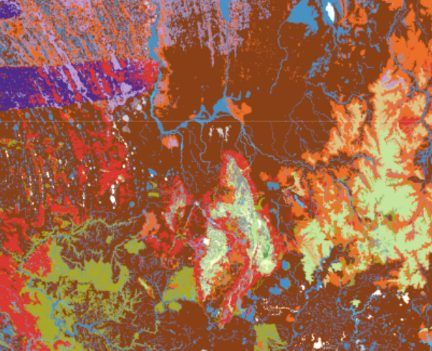
Before 1750
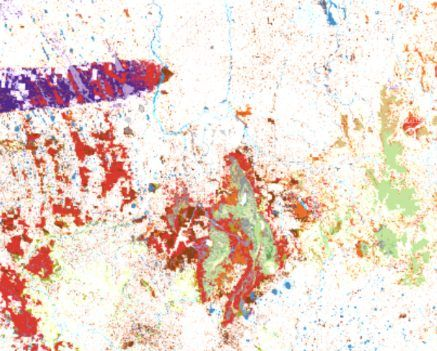
Today
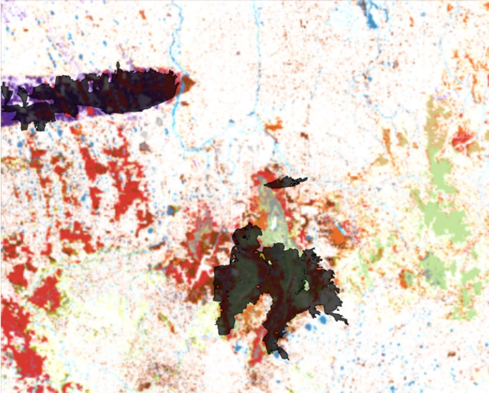
Today, with the 2024–25 fires
Native vegetation across western Victoria before 1750 and today, and the 2024–25 fire scars over what is left.Draft image · Elia’s introduction slides; native vegetation from DEECA’s NatureKit, 2024 and 2025 fire extents from VicEmergency mapping
Maps
Three maps of the same area: native vegetation before 1750, native vegetation remaining today, and today’s remnants with the 2024–25 fire scars in black. Together they show the parks as islands, and how much of each island burnt.
Source: native vegetation layers in DEECA’s NatureKit, and VicEmergency mapping of the 2024 and 2025 fires (via the three slides from Elia’s introduction at the Pomonal ‘reading the landscape’ workshop). Check reuse permissions for the underlying layers.
Much of the land around the parks, near fire edges, is privately owned: remnant habitat on bush blocks, and old habitat trees along roadsides and in paddocks. It could be that your block was only partially affected by fire and still has some intact mature remnant bushland; that country is the refuge wildlife moves into while the parks recover. Or even if your block burnt completely, it may be nearer to bush that survived, or it may have burnt less fiercely than the park thanks to the efforts of firefighters. This means your block may be right on the interface where animals and plants start moving back into the burnt country. What you do there can help that return.
Needed
Confirm the burnt-area figures for the Grampians National Park (“around 70%”) and the Little Desert (“nearly all”) against DEECA fire history data, and add a source. These were given as approximate in the workshop talk.
Part 1
Where you are
After a fire, most people want to know one thing: was this a “good fire” or a “bad fire” for my block?
A fire can’t be classified quite so easily, but we can get a sense of how challenging recovery might be for sensitive species by learning how that country has adapted to burn. Part 1 will help you work out what sort of country you have: your bioregion and geology, your vegetation type, and when your place burnt before this.
This will tell you how resilient your block likely is to fire and whether it was at a stage where its plants and animals were ready for it. This can help you work out whether any species will need extra help as the habitat renews.
Start by looking up your block
Open the Wimmera Bushfire Ecology Lookup Tool, built as part of the Wimmera Landcare Fire Recovery Partnership. It brings together publicly available state data on your block’s bioregion and geology, vegetation type, fire history, fire intervals and growth stage, and lists the plants that belong in your bush.
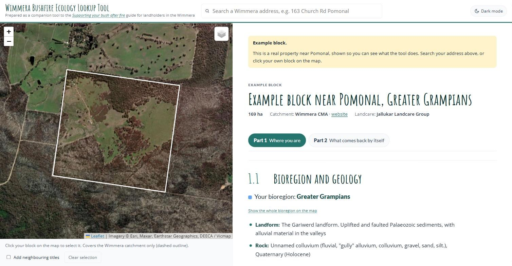
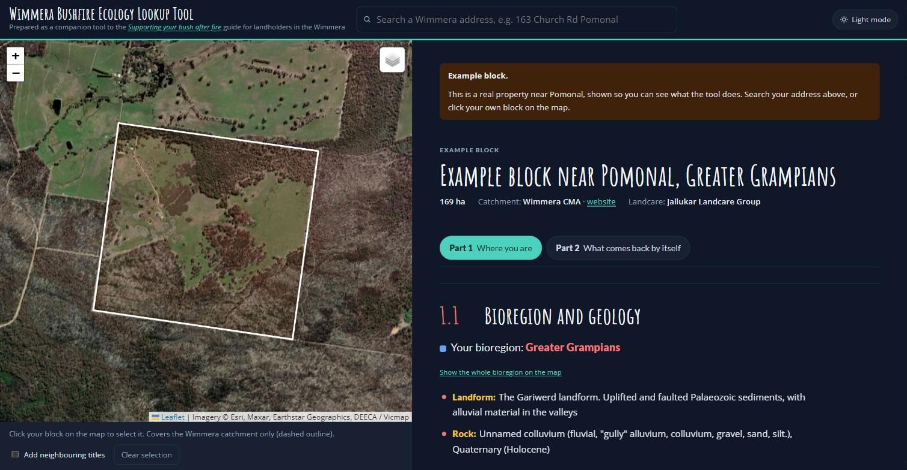
The lookup tool opens on an example block near Pomonal. The map is on the left; everything about the block you select is on the right, in two tabs that match Parts 1 and 2 of this guide.Wimmera Bushfire Ecology Lookup Tool · example block near Pomonal · October 2026
Using the lookup tool
Find your block. Type your address into the search box at the top, or zoom the map and click your block. The tool outlines the property title you picked in white, and names your catchment management authority and local Landcare group. It covers the Wimmera catchment only, the dashed line on the map.
Add the rest of your place. If your property is more than one title, tick Add neighbouring titles and click the others. Clear selection starts again.
Read down Part 1. The sections are numbered to match this guide, 1.1 to 1.4. As you scroll, the map shades your block for the section you are reading. Click a row in any table to highlight that part of your block in yellow; click it again to clear it.
Write it down. At the end of Part 1 the tool gathers everything into a short record you can copy, save or print. Take it to your Landcare group, or keep it with your property plan (Part 5).
Very large titles, such as a national park, are looked at as a 150-metre circle around where you clicked, to keep the tool quick.
Once you have found your block in the lookup tool, follow along through Part 1 of this guide, where we explain what the information in the lookup tool means for you.
Follow along · the example block near Pomonal
Through Parts 1 and 2 we use the block the lookup tool opens on: 169 hectares of bush and cleared paddock on the edge of the Grampians near Pomonal, and one of the project’s nine demonstration properties. It burnt in the 2006 Mt Lubra fire and again, in part, in the 2025 Yarram Gap Road fire, so it shows most of what the tool can tell you.
1.1
Bioregions and geology
To get to know your block, there are a few things you can look up that tell you what sort of habitat it has, and how that habitat responds to fire.
Fire ecology is shaped by vegetation type, which is shaped by climate and by soil, which in turn is shaped by geology. So the first step is to find your overall climate, soil and geology type: your bioregion.
What is a bioregion?
A bioregion is a big stretch of country that has broadly similar landforms, rocks, soils and climate, so it grows a recognisable mix of plants and supports a recognisable mix of animals.
Victoria is divided into 28 bioregions. They are drawn at a landscape scale, tens to hundreds of kilometres across, so your bioregion tells you what kind of country you are in, not exactly what grows on your block. That finer detail is your vegetation type (section 1.2). The bioregion is the big picture it sits inside.
This guide covers five bioregions: the four that cover the fire-affected country of the Wimmera and Grampians,1 and the Lowan Mallee of the Little Desert.27
Bioregions around the Grampians and Wimmera, from the Victorian Bioregions layer in DEECA’s NatureKit. The original data can be found in NatureKit by turning on Victorian Bioregions.Draft image · Yasmin Kelsall, ‘Reading the landscape’ talk; DEECA NatureKit
Map
The four bioregions across the Wimmera and Grampians, with the fire-affected country marked, so a reader can find roughly where they sit before reading the table.
Source: the Victorian Bioregions layer in NatureKit. Needs a simple redrawn version rather than a screenshot — check what the basemap licensing allows.
Bioregions across the Wimmera and Grampians fire-affected country, and the Little Desert.12
Bioregion
Landform and geology
Vegetation you’d expect
What it means for fire
Greater Grampians
The Gariwerd landform. Uplifted and faulted Palaeozoic sediments, with alluvial material in the valleys.
Deep, infertile sands growing heath and mallee: flammable, prone to large fires, and many of its plants depend on fire to regenerate.
Now use the lookup tool to find out your own bioregion.
In the lookup tool: section 1.1
In the Wimmera Bushfire Ecology Lookup Tool, section 1.1, Bioregion and geology, names your bioregion. If your block crosses two bioregions you get a card for each; click one to highlight its part of the block. Show the whole bioregion on the map zooms out to all of it.
Follow along · the example block near Pomonal
Section 1.1 for the example block. While the section is on screen, the map shades the block in its bioregion’s colour.Wimmera Bushfire Ecology Lookup Tool · example block near Pomonal · October 2026
The example block sits in the Greater Grampians bioregion: uplifted, faulted sedimentary country on the edge of the ranges. The whole block is on colluvium: gravel, sand and silt washed down the gullies from the ranges in recent geological time. Sandy, well-drained ground like that grows heathy vegetation, which is flammable most of the year, burns hot, and depends on fire to regenerate.
Because bioregions are mapped at a very large landscape scale, on their own they don’t say a great deal about how your block responds to fire. For that we need its vegetation types. But we start with the bioregion because it tells us which vegetation types we might find. So now let’s step down into your bioregion’s vegetation types, in the next section.
Needed
The Lowan Mallee row is new, drafted from VicFlora and DEECA’s Lowan Mallee EVC list, and the lookup tool now uses the same text. The new What it means for fire column folds in the old bullet points (Greater Grampians and Victorian Volcanic Plain) and adds lines for the Wimmera, Central Victorian Uplands and Lowan Mallee that are drawn from the fire divisions in 1.4 rather than a published source. All of it needs a check by Yasmin Kelsall or Huib.
Parts 1 and 2 now follow the demonstration block the lookup tool opens on (the property in the Long Gully photo sequence in 2.1). Get the landholder’s agreement before publishing: the screenshots show the boundary on aerial imagery, so the property will be recognisable.
1.2
Finding your vegetation type
How often your bush should burn, what should return on its own, and what plants are appropriate to plant there all depend on which vegetation type you have.
Every bioregion has a list of possible vegetation types. A vegetation type is a particular community of plants that grows wherever the same conditions repeat, such as the same soil, slope, drainage and rainfall. Each one has its own recognisable mix of trees, shrubs, grasses and herbs. A single block can have several vegetation types side by side, set by changes in the landscape, such as heathy woodland on a sandy rise and herb-rich woodland down in a damp gully.
Victoria’s official name for these vegetation types is Ecological Vegetation Class, or EVC. The state has sorted all its native bush into about 300 of these classes, each with a name and a number, such as Heathy Woodland (48) or Plains Grassy Woodland (55). It has mapped them across Victoria, both as the bush stands today and as it was before 1750. The conservation status listed for each EVC is based on how much of it has been lost since 1750.
Once you know your EVC, you can find out how it responds to fire. The state has sorted every EVC into a fire division: a group of EVCs that behave in much the same way when fire comes through. Victoria’s 300 or so EVCs fall into 32 of these divisions.2 Within one division, the bush recovers at about the same pace and has the same sensitive plants to protect. So instead of setting fire rules for every vegetation type, ecologists set them once for each division: how soon after one fire the next can safely come, how long the bush can go without fire, and how long it takes to grow from young regrowth to old bush.
With that knowledge, you can look up your own EVCs and fire divisions.
In the lookup tool: section 1.2
In the Wimmera Bushfire Ecology Lookup Tool, section 1.2, Your vegetation type, lists each vegetation type mapped on your block, with its conservation status, its fire division and its area. The two buttons at the top switch between Intact vegetation remaining today (the 2005 mapping) and Pre-1750 vegetation. Click a row to see where that vegetation sits on your block: it turns yellow on the map.
Follow along · the example block near Pomonal
Section 1.2 for the example block, with the Heathy Woodland row clicked. The yellow on the map is where it is mapped.Wimmera Bushfire Ecology Lookup Tool · example block near Pomonal · October 2026
Most of the bush on the example block is mapped as Heathy Woodland (EVC 48), 67 hectares or about 40% of the block. Another 22 hectares is Shrubby Woodland (EVC 282) and 7 hectares Damp Sands Herb-rich Woodland (EVC 3). All three are listed as Least Concern in this bioregion. The other 73 hectares, 43% of the block, has no native vegetation mapped: the cleared paddocks you can see on the aerial photo.
Switch to Pre-1750 vegetation and the whole block was bush: 78% Heathy Woodland, 17% Shrubby Woodland and 5% Damp Sands Herb-rich Woodland. That tells you which plants would be best suited to those areas if you revegetated (section 4.9).
The lookup tool matches Heathy Woodland and Shrubby Woodland to the Grassy / Heathy Dry Forest fire division, and Damp Sands Herb-rich Woodland to Forby Forest. This is where we learn how those vegetation types respond to fire. For example, Grassy / Heathy Dry Forest is fire-dependent: much of its regeneration is triggered by fire, and a good deal of what grows there is killed outright and comes back only from seed.
Where this comes from. DEECA’s 2005 and pre-1750 Ecological Vegetation Class mapping, with Bioregional Conservation Status. To look at the source maps yourself, open NatureKit, search your address, and turn on 2005 Ecological Vegetation Classes or Pre-1750 Ecological Vegetation Classes.
Needed
Worth stepping through NatureKit once to confirm the layer names in the note above, which come from DEECA documentation rather than the live tool.
Yasmin Kelsall pointed to the regional EVC reports, where experts did on-ground flora assessments, as the place to check what should grow in each EVC. Once those two report titles come off her slides, add them here and in 4.9.
1.3
Your property’s fire history
At this stage we know our block’s vegetation types and how they are expected to respond to fire.
So now we need the block’s fire history. How the bush responds to the most recent fire depends on how often it has burnt before. We are interested in the interval between fires, not just any single fire.
The lookup tool uses the Victorian Government’s fire history maps, which go back to 1939. Before you look up your fire history, there are a few things to keep in mind.
Not all fires have been mapped. Coverage is best for large fires on public land. Small and older fires on freehold are recorded patchily. A blank is not evidence that nothing burnt.
The map shows perimeters, not severity. The fire history maps don’t show the difference between an extremely hot fire that removed entire canopy layers and a cooler, patchier fire. Ground shown inside a fire boundary may still contain patches that didn’t burn. The state has separate severity mapping for some recent fires, modelled from aerial and satellite imagery, and the lookup tool uses it where it exists.34
Fire history of the Grampians National Park, 2005–2024 (left) and the 2025 fire (right).Draft image · Pauline Rudolph, Parks Victoria, Pomonal talk
In the lookup tool: section 1.3
In the Wimmera Bushfire Ecology Lookup Tool, section 1.3, Your property’s fire history, lists every fire on the state record for your block since 1939: the fire’s name, whether it was a bushfire or a planned burn, how much of your block it burnt, and how severe it was. The map shades each fire in its own colour, oldest in orange through to the most recent in deep red. Click a fire to highlight the part of your block it burnt in yellow. Show the whole fire on the map zooms out to everything that fire burnt, and Back to your block brings you home.
Follow along · the example block near Pomonal
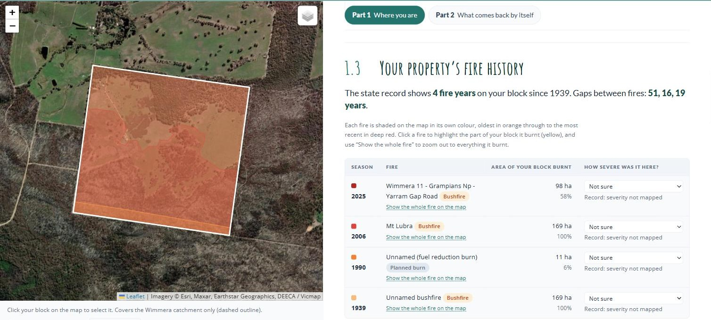
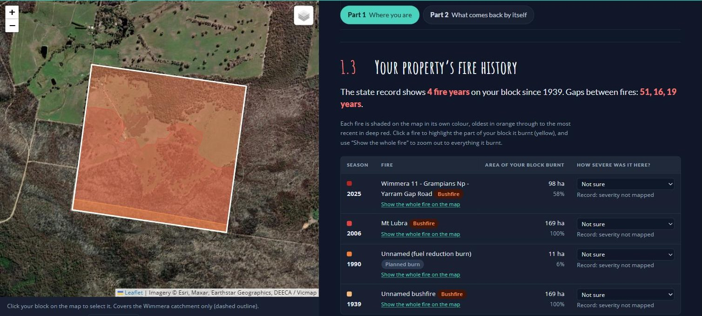
Section 1.3 for the example block: four fires on the record, two of which burnt only part of the block.Wimmera Bushfire Ecology Lookup Tool · example block near Pomonal · October 2026
The state record shows four fires on the example block: a bushfire in 1939, a small 1990 planned burn that caught 11 hectares in one corner, the 2006 Mt Lubra fire, and the 2025 Yarram Gap Road fire. The table gives each fire’s season and name, whether it was a bushfire or a planned burn, and how much of the block falls inside its mapped boundary. The 1939 and 2006 fires covered the whole block. The 2025 fire covered 98 hectares, 58% of it, and the rest escaped. Section 1.4 turns the gaps between those fires into a verdict, part by part.
Clicking the 2025 fire turns the part of the block it burnt yellow, and Show the whole fire on the map zooms out to show the block was a small piece of a fire that ran through much of the Grampians. That is what makes the part that escaped so valuable (section 2.1).
The last column, How severe was it here?, is filled in from the state’s severity mapping where it exists. None of these fires has severity mapping on this block, so it reads Not sure. If you saw the fire, or the ground straight after it, set it yourself: High means crowns burnt with few unburnt patches, Patchy means the canopy was mostly intact. Section 1.4 uses it. Under the table you can also add fires the record missed, such as one you, a previous owner or a neighbour remembers.
Your block in the landscape
Your block’s fire history means more once you know what happened to the bush around it. A block that escaped when most of the country around it burnt is a refuge: it may be sheltering animals with nowhere else to go, and it holds the seed and shelter the burnt country will recover from. A block that burnt when the bush around it didn’t is a burnt island: plants and animals have unburnt country close by to come back from, so recovery may be quicker. And where nearly everything burnt, every unburnt patch counts, on your block or your neighbour’s.
In the lookup tool: your block in the landscape
At the bottom of section 1.3, the Wimmera Bushfire Ecology Lookup Tool looks at the native bush within 5 km of your block and how much of it burnt in your block’s most recent fire. It gives a one-line summary, then the share of the surrounding bush that burnt, the share of your block’s bush that burnt, and how much of the unburnt bush nearby is on your block. Show the 5 km around your block on the map zooms out to show it: unburnt bush in teal, burnt bush in orange, inside a dashed 5 km ring.
Follow along · the example block near Pomonal
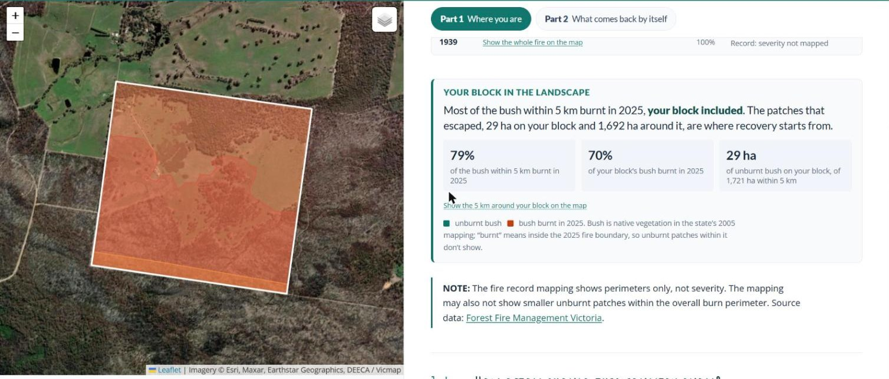
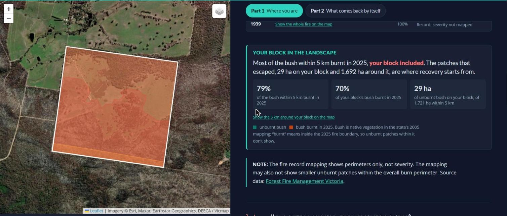
Your block in the landscape for the example block.Wimmera Bushfire Ecology Lookup Tool · example block near Pomonal · October 2026
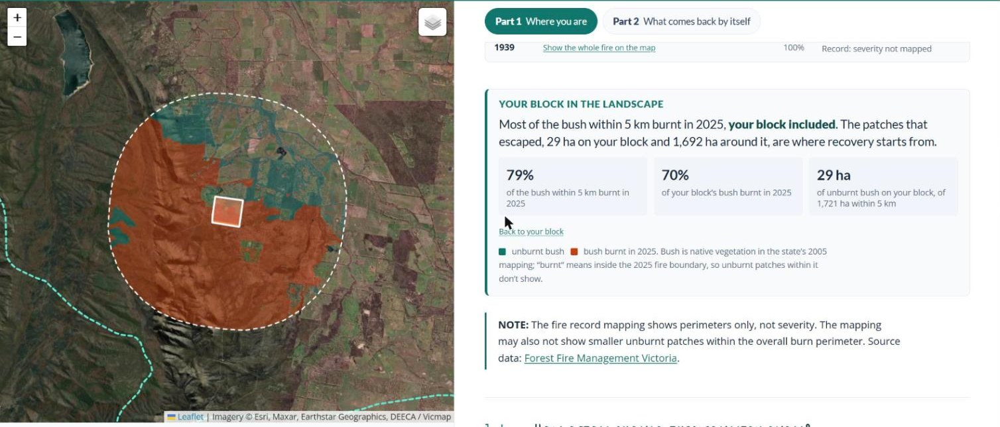
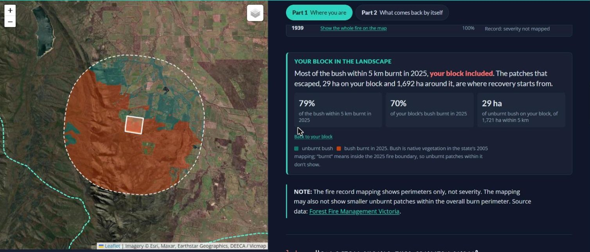
The 5 km around the example block: bush that burnt in 2025 in orange, unburnt bush in teal.Wimmera Bushfire Ecology Lookup Tool · example block near Pomonal · October 2026
Around the example block, the 2025 fire was widespread. About 79% of the bush within 5 km burnt, and 70% of the block’s own mapped bush. The tool sums it up as “Most of the bush within 5 km burnt in 2025, your block included.”
So the block isn’t a lone refuge: its 29 hectares of unburnt bush are a small share of about 1,700 hectares still unburnt within 5 km. But in country that burnt this heavily, those patches are where recovery starts from, for the plants and animals on the block and for the burnt bush next door. That is why the unburnt part of the block is worth protecting first (section 2.1).
As with the fire table, “burnt” here means inside the mapped fire boundary, and the bush is the state’s 2005 vegetation mapping. Unburnt patches inside the fire boundary, and bush cleared or regrown since 2005, won’t show.
Where this comes from. DEECA’s fire history records, published on DataVic as Fire History Records of Fires across Victoria and Fire History showing the number of times areas have been burnt.3 Forest Fire Management Victoria also publishes maps of the major bushfires since 1939. If you’d rather not use the lookup tool, your Landcare facilitator, CMA or council can map your block’s fire history in a few minutes.
Needed
The lookup tool loads the state data from the guide’s GitHub Pages site (checked 2 October 2026). If the landholder can say how hot the 2025 fire ran on the example block, set it in the tool and update 1.4.
1.4
How often should this country burn?
Now we come back to the big question: was this a ‘good fire’ or a ‘bad fire’ for my block?
It’s not so much whether the fire was good or bad, but whether this fire, at this severity, this long after the last one, is something your more sensitive plant species can re-establish after.
Victorian fire ecologists answer this question with two numbers for each fire division: a minimum and a maximum tolerable fire interval.2
The minimum tolerable fire interval
This is the shortest gap between fires a vegetation community can take without losing species. It is set by the plants fire kills outright, which return only from seed: the “obligate seeders”. These include most local peas, wattles, banksias and hakeas. A seeder must grow, flower, and build a seed store before the next fire. If fire returns first, there is no seed left and the species is gone from that patch.2
There are two minimums, because severity matters as much as timing:2
After a high-severity fire — crowns burnt, few unburnt patches — more of the existing seed bank may have been destroyed, and there are fewer surviving plants. It takes much longer for the seed bank to build back up.
After a low-severity, patchy fire — canopy largely intact, plenty of unburnt islands — the minimum tolerable fire interval is shorter. Sensitive species may have survived in the unburnt patches, where the seed bank and new seed were left untouched. These patches carry them through while they regrow from seed in the burnt ground.2
Note
This means an unburnt patch in the middle of your block is worth protecting well out of proportion to its size.
The maximum tolerable fire interval
This is the longest a community can go without fire before it starts to lose the species that rely on fire to grow and reproduce.2 Grasslands that go too long without fire can be choked out by their own tussocks and lose their herbs. Some species won’t germinate until smoke or heat triggers them. A long absence of fire is not automatically a good outcome.
Tolerable fire intervals for vegetation divisions common in the Wimmera and Grampians, after Cheal (2010). Years.2
A vegetation type contains a hundred or more plant species, but of those there may only be ten to fifteen that are sensitive to fire coming either too soon or not soon enough. Those species, called key fire response species, are what set the minimum and the maximum. Everything else in the community can tolerate a wider range.12
You can put even more confidence in these estimates once you have confirmed which of those key fire response species grow on your block. We will come to that in Part 2.
For example, Grassy / Heathy Dry Forest is the most widespread fire division in the Grampians foothills. It recovers fast and much of its regeneration is fire-cued. It is generally healthiest when fires come no sooner than 15 years apart and no more than 45. But large parts of the Grampians National Park have now been burnt severely twice inside fifteen years, which is when the risk grows of its seeders beginning to drop out. After the 2006 Mt Lubra fire, Grampians Rice-flower took two years to first flower and Grampians Bitter-pea took three. Flowering is just the first step: from there they need to set seed, and repeat that over enough seasons to build up a large enough seed bank before the next fire.3
In the lookup tool: section 1.4
In the Wimmera Bushfire Ecology Lookup Tool, section 1.4, How often should this country burn?, gives you an estimate of your own block’s relationship to fire. It opens with a one-line verdict, then the tolerable fire intervals that likely apply to your block, then a fire timeline for each part of your block with its own fire history.
Follow along · the example block near Pomonal
The top of section 1.4 for the example block: the verdict, the intervals that apply, and the colour key. On the map, the hatched ground burnt in 2025 and is still recovering; the outlined ground escaped and is within its tolerable range.Wimmera Bushfire Ecology Lookup Tool · example block near Pomonal · October 2026
Further down, a timeline for each part of the block with its own fire history.Wimmera Bushfire Ecology Lookup Tool · example block near Pomonal · October 2026
The verdict for the example block: “Your bush is recovering from its last fire and within its tolerable range. Another fire before 2040 would come too soon.”
Underneath, the tool draws a fire timeline for each part of the block with its own fire history. The dots are fires, and the bar between two dots is the gap between them, coloured by the verdict on that gap: teal, within the tolerable interval; amber, within it only if the earlier fire was patchy; orange-red, shorter than sensitive plants may tolerate; purple, longer than they may tolerate. The hatched stretch after the last fire is the time the seeders need to rebuild, ending in the first year another fire would clear the minimum. The square beside each timeline, and that part of the block on the map, take the colour of its most pressing status.
The example block splits into four parts:
56 hectares of Grassy / Heathy Dry Forest (Heathy and Shrubby Woodland) burnt in 1939, 2006 and 2025. The 19-year gap from 2006 to 2025 clears the 15-year minimum, but not by much. The 67 years before that shows purple: longer than the 45-year maximum, which is its own kind of signal. It is still recovering, and another fire before 2040 would come too soon.
11 hectares of the same division also caught the 1990 planned burn, so its gaps run 51, 16 and 19 years. Same verdict: recovering until 2040.
22 hectares escaped the 2025 fire. Last burnt in 2006, it cleared its minimum in 2021 and is now within its tolerable range.
7 hectares of Damp Sands Herb-rich Woodland (Forby Forest) also escaped in 2025. Its 67-year gap is well inside Forby Forest’s 150-year maximum.
The 2040 date assumes the 2025 fire was severe, because the record doesn’t say; where severity isn’t known, the tool always assumes the worse case. If the landholder sets it to patchy in section 1.3, the minimum drops to 10 years and 2040 becomes 2035.
Needed
All five rows check out against the primary source: they match Table 2.5 of Cheal (2010) exactly. The key fire response species for our divisions are not in that report (they sit in a database, not the published tables), so this section explains the idea without naming them.
The sentence that large parts of the Grampians National Park have burnt severely twice inside fifteen years needs a source: Pauline Rudolph’s fire history slides, or a count from the state fire layers.
Link the maximum tolerable fire interval paragraph to the Project Platypus page on chocolate lilies (URL to come from Elia).
Should Sands Heathland and Shallow Sands Woodland be added for the Little Desert?
1.5
Bringing Part 1 together
By now you have four readings for your block: its bioregion, its vegetation types and their fire divisions, its fire history, and how that history sits against the tolerable fire intervals. Together they tell you what sort of recovery to expect, and what to keep an eye on. We will discuss this more in Part 2.
Follow along · the example block near Pomonal
What Part 1 told us about the example block
Where it is. The block sits in the Greater Grampians bioregion, on sandy colluvium washed down from the ranges. That is country that grows heathy vegetation, which is flammable, burns hot, and relies on fire to regenerate.
What grows there. About 40% of the block is mapped as Heathy Woodland, with smaller areas of Shrubby Woodland and Damp Sands Herb-rich Woodland. The rest is cleared paddock. The two woodlands belong to the Grassy / Heathy Dry Forest fire division, which can take a fire every 15 to 45 years. The damp sands woodland belongs to Forby Forest, which is far more tolerant of long gaps.
How often it has burnt. Four fires are on the record since 1939: a bushfire in 1939, a small planned burn in 1990, the 2006 Mt Lubra fire and the 2025 Yarram Gap Road fire. Both 1939 and 2006 burnt the whole block. The 2025 fire burnt a little over half of it.
Whether that suits the country. The 19 years between the 2006 and 2025 fires is within the tolerable range for Grassy / Heathy Dry Forest, but only just. The burnt part of the block is now recovering, and another fire before about 2040 would come too soon. The part that escaped in 2025 is within its range.
What it adds up to. The burnt part came at the short end of what this country can typically take, so the sensitive plants there are the ones to keep an eye on as it recovers. The 30 hectares that escaped are now the block’s most valuable bush.
In the lookup tool: Write it down
At the end of Part 1, the Wimmera Bushfire Ecology Lookup Tool gathers everything into a short record you can copy, save or print. Take it to your Landcare group, or keep it with your property plan (Part 5).
Part 2
What happens next
Most of what was on your block before the fire is still there, even if you can’t see it yet. Plants resprout from buds under the bark or below ground, seed stored in the soil germinates in the ash, and animals move back in as shelter and food return.
This part explains the stages recovery moves through, the strategies plants use to come back, and which ones are likely to struggle. This will help you understand what should reappear, and roughly when. It will also help you identify sensitive species that may be at risk of dropping out.
What should come back on your block
On its Part 2 tab, the Wimmera Bushfire Ecology Lookup Tool lists the native plants that may be found on your block and marks each one as a resprouter or one that is killed by fire and returns from seed. The same tab also shows the growth stage of each part of your block (section 2.1).
2.1
The recovery timeline
Vegetation growth after a fire progresses in recognisable stages. Fire ecologists call these growth stages, and count them from the last fire. Two patches of the same vegetation type, both in good condition, can look nothing alike, and the usual reason is how long since each last burnt. No stage is the “good” one. Different plants and animals prefer different growth stages, so the highest biodiversity generally comes with a mosaic of growth stages.
How long each stage lasts
How long each stage lasts depends on the vegetation, so the stages are set for each fire division (section 1.2).
Years since fire for each growth stage, in the region’s common vegetation divisions.2
Vegetation division
Juvenile
Young
Mature
Old
Grassy / Heathy Dry Forest
0–3
3–10
10–35
35+
Forby Forest
0–3
3–10
10–150
150+
Inland Plains Woodland
0–4
4–19
19–120
120+
Treed Swampy Wetland
0–3
3–8
8–30
30+
Basalt Grassland
0–2
2–4
4–6
6+
Note how different the rows are. Bush that burnt thirty-five years ago is old in Grassy / Heathy Dry Forest and barely middle-aged in Forby Forest, while Basalt Grassland is old just six years after a fire.
Inland Plains Woodland rarely carries fire at all. Its stages describe what follows the unusual fire that does get through, and its 150-year maximum is only a best estimate. Some stands can be degraded by a single fire.
What you should see at each stage
What to expect at each growth stage. When each stage starts and ends depends on your fire division (table above), and on how severe the fire was and the season it came in.2
Stage
What you see
Juvenile
In the first months, black ground and then a green fuzz. Resprouters shoot, grass trees within a fortnight.7 Surviving animals are suddenly very visible.8 Then fire ephemerals carpet the bare ground and hold the soil, seedlings of the plants the fire killed appear, and bird diversity is still low.
Young
The shrub layer closes in. Small mammals are well down but climbing; some peak around ten years after fire.98
Mature
The second generation of plants killed by the fire reaches full size and sets seed properly. Logs and litter build up, and the bush gets more varied in structure.
Old
Mammal populations have recovered, and this is where most hollows are. In country that relies on fire to regenerate, it needs fire again.
In the lookup tool: section 2.1
On the Part 2 tab of the Wimmera Bushfire Ecology Lookup Tool, section 2.1, Growth stages, works out the stage of each part of your block from the years since it last burnt, using the first table above. While the section is on screen, the map colours each part of the block by its stage, from pale green for juvenile to dark green for old. Click a row to highlight that part of the block.
Follow along · the example block near Pomonal
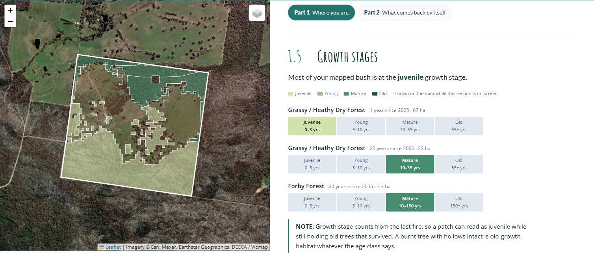
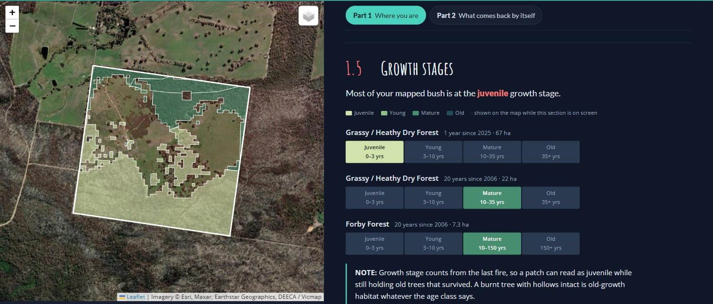
Section 2.1 for the example block: juvenile where the 2025 fire went through, mature where it didn’t.Wimmera Bushfire Ecology Lookup Tool · example block near Pomonal · October 2026
The 67 hectares of Grassy / Heathy Dry Forest that burnt in the 2025 Yarram Gap Road fire is juvenile, early in a stage that runs to three years. By its second spring, in late 2026, fire ephemerals should be carpeting the bare ground there and seedlings of the plants the fire killed should be showing. The 22 hectares that escaped last burnt in 2006, twenty years ago, so it is mature (10–35 years in its division), and the Damp Sands Herb-rich Woodland is early in Forby Forest’s long mature stage. The block now carries two stages side by side, and the older one is the scarcer: about four-fifths of the bush within 5 km burnt in 2025 (section 1.3), so the block’s unburnt bush is one of the patches the surrounding country will recover from.
Wildlife in the first few years
In the first six months you may see more wildlife than usual. That is exposure, not recovery — the survivors have nowhere to hide. Numbers usually fall from here as food and shelter run out and predators find them easy — predation pressure measurably rises once cover is gone. This is when pest control does the most good.1053
Small mammals mostly come back from animals that survived the fire on the spot, in unburnt patches, logs, rock piles and burrows, rather than from animals moving in from outside.8 That is one more reason the unburnt patches on your block matter. Expect numbers to stay well down for the first few years and climb as the shrub layer thickens; some species peak around ten years after fire, and drought can hold the climb back.9
After a high-severity fire, bird diversity can stay low for three years or more, so a quiet block in the second year is normal — and in the Grampians heathy woodlands, patchy burns held more species than wildfire did.11
The biggest disruptions to healthy post fire renewal
Drought first, then browsing pressure, then weeds. Two of the three are things you can act on.313
Weeks
A month
Two months
Spring
Recovery on one Pomonal property through the first months after the December 2024 fire. Stand-in until the same-vantage sequence is chosen.Draft image · John King, Pomonal talk. Confirm which photo is which interval
Image sequence
The same vantage point at two weeks, four weeks, two months and the following spring.
Different animals need different stages at the same time. Young regrowth is dense at ground level, good for small mammals and low-feeding birds. Mature bush has structural variety and accumulated logs. Old bush is where most hollows are. Old vegetation is now managed as an asset in its own right on public land, precisely because it is so hard to replace.3
The state’s benchmarks for public land give a sense of balance: roughly 5% juvenile, 10% adolescent, 30% mature and 20% old, with no more than 30% of fire-sensitive types below their minimum interval. These are landscape-wide targets, not property targets.36
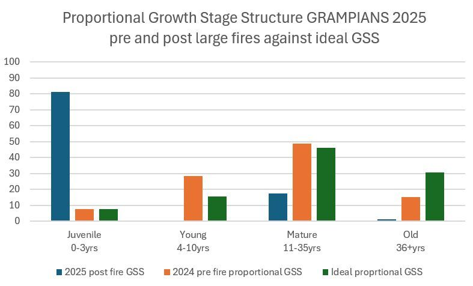
Growth stages across the Grampians before and after the 2024–25 fires, against the ideal mix. After the fires most of the park is juvenile.Draft image · Pauline Rudolph, Parks Victoria
What it means for your block
If everything around you burnt and a corner of yours didn’t, that corner may hold the only deep litter, dense shelter and standing midstorey for some distance, and may be carrying animals with nowhere else to go. In the lookup tool it shows up in section 2.1 as mature or old ground beside juvenile, as on the example block, and Your block in the landscape at the end of section 1.3 shows how much unburnt bush there is around you. When fires have come back before the minimum tolerable interval was reached, protecting the unburnt areas you already have is generally the most valuable thing you can do.
The reverse also holds: surrounded by long-unburnt country, your young regrowth may be the scarce stage, and protecting the rare species that pop up after the fire from weeds and grazing may be the most valuable thing you can do.
A note
Growth stage is counted from the last fire, which, as we discussed in 1.3, may not show unburnt patches within the fire boundary. So a patch can read as juvenile while still holding some old trees that survived. A burnt paddock tree with hollows intact is old-growth habitat whatever the age class says. Mapping your good hollow trees is a very helpful activity, covered later in the guide (section 4.5).
Needed
This section now combines the old 1.5 (growth stages) and 2.1 (recovery timeline). The lookup tool screenshot still shows growth stages as section 1.5 on the Part 1 tab; retake it once the tool change is on GitHub.
The mammal paragraph is new and draws on Hale and others (2022, 2016). The “What you see” table now uses the four stage names of the first table rather than its own five; worth an ecologist’s check of both.
The photo sequence above is from the example block. Its caption says the December 2024 fire, but the state record and the project’s site records give the 2025 Yarram Gap Road fire (January 2025). Confirm the date with the landholder.
The Inland Plains Woodland, Treed Swampy Wetland and Basalt Grassland rows fold Cheal’s five stages for each into the guide’s four (renewal and juvenility together as Juvenile, the last stage as Old). Worth an ecologist’s check.
Which term throughout — “young” or “adolescent”? Cheal’s formal stages for Grassy / Heathy Dry Forest run renewal, juvenility, adolescence, maturity, waning, senescence; Forby Forest has vigorous maturity and stasis instead of maturity and waning, so the two divisions do not even share a vocabulary. Recommendation: keep the plain set in the table and gloss the formal terms once in the glossary. The percentages above are attributed to La Trobe University work — that publication still needs pinning down.
2.2
How plants come back — and which ones won’t
In the first weeks the bush looks dead. Most of it isn’t. Nearly every plant on your block uses one of four strategies, and knowing which is which tells you what to expect — and which species to worry about.
1. Resprouters — back in weeks
Growing points protected under thick bark or underground. Eucalypts shoot straight down the trunk and along the limbs; grasses and bracken come from underground; grass trees have been recorded shooting within a fortnight.72
Look for: shoots emerging from bark, fresh growth at the base of a trunk, green spears in a burnt tussock. If you see this, the plant is fine.
Resprouting: new shoots bursting from buds under the bark within weeks of the fire.Draft image · John King, Pomonal talk
2. Obligate seeders — killed, and starting over
Killed outright, returning only from seed in the soil or released from woody fruit by heat. Most local banksias, hakeas, wattles and peas.1432
Look for: nothing at first, then a carpet of seedlings, usually late in the first year. The parent plants stay dead — cutting them back achieves nothing.
Mt Cassell Grevillea is killed by fire and comes back only from seed (left). Seedlings coming up through the ash bed (right).Draft image · Pauline Rudolph, Parks Victoria
3. Fire-cued germinators — things you have never seen
Seed that sits in the soil for decades until smoke or heat breaks dormancy. It is why people find orchids, lilies and peas they are certain were never there — the orchid response after Black Saturday was documented in detail for exactly this reason.15 After the 2006 Mt Lubra fire, monitoring turned up entirely new populations of threatened plants in country unburnt for fifty or sixty years.3
Look for: anything unfamiliar, especially in the first spring. Much of it won’t be visible again for decades.
Grass trees flowering en masse after fire (left), and a beard orchid in the first spring (right).Draft image · Pauline Rudolph, Parks Victoria; John King
4. The space-takers
Plants built to exploit bare ground, full sun and no competition. Among natives these are the fire ephemerals: fast, short-lived, and useful for holding soil and feeding insects and seed-eaters.2 The same opening is what weeds are built for — see Part 4.
Your plant list in the lookup tool
In the lookup tool: Plants that belong in your bush
On the Part 2 tab, the Wimmera Bushfire Ecology Lookup Tool lists the native plants recorded in survey plots of your vegetation type across your bioregion, with how each one handles fire. There is a tab for each vegetation type on your block, plus an All together tab that combines them into one list for the whole block. The vegetation you are looking at shows in yellow on the map. Seeders that need watching are pulled out to the top.
Each plant card shows:
How common it is — the bar and percentage are the share of survey plots of this vegetation type where the plant was recorded. The list is in that order, most common first.
How it handles fire — Resprouts or Killed by fire, regrows from seed. Where the published records disagree, it says Usually.
Where its seed is kept — in the soil, or held on the plant in woody fruit until fire releases it.
Seeds at … yrs — how many years a seedling takes to set its first seed.
Too young to seed since … — for seeders, a warning that not enough years have passed since this vegetation last burnt on your block for new plants to have set seed. May be seeding again since … means it is borderline.
Above the full list, the seeders that need attention are pulled into two groups:
Survey for these first — shown where part of your block burnt twice within the time these plants need to set seed, so they may have had no seed on board when the second fire came. Plants that hold their seed in woody fruit, like banksias and hakeas, are most at risk, because the second fire burns the seed before it drops.
Should be fine if fire stays out until … — the other seeders, still growing back from the last fire. The year is when the slowest of them should be seeding, but only if the seedlings get the chance to grow: weeds that smother them, or rabbits, deer and other grazers that eat them, can wipe them out just as surely as a fire that comes too soon (Part 4).
Use the filters to show one plant type (shrubs, grasses, herbs) or one fire response. Tap a plant’s name to see it on iNaturalist.
Follow along · the example block near Pomonal
The Part 2 tab for the example block, on Heathy Woodland. The yellow on the map is where Heathy Woodland is mapped.Wimmera Bushfire Ecology Lookup Tool · example block near Pomonal · October 2026
Survey for these first: seeders that may not have set seed between the 2006 and 2025 fires.Wimmera Bushfire Ecology Lookup Tool · example block near Pomonal · October 2026
On the Heathy Woodland tab, the lookup tool lists 120 native plants that turn up regularly in 227 survey plots of Heathy Woodland in the Greater Grampians, surveyed between 1976 and 2021. Of those with fire data, 95 resprout and 23 are killed by fire and come back from seed. The most common are Heath Tea-tree (in 92% of plots), Flame Heath, Austral Grass-tree, Tassel Rope-rush and Common Beard-heath. All of them resprout, which is why this country greens up quickly after a fire.
The seeders are the watch list, and on this block the lookup tool has already sorted them. Because 67 hectares burnt in 2006 and again in 2025, only 19 years apart, it puts nine seeders under Survey for these first, among them Silver Banksia, Showy Parrot-pea, Cat’s Claw Grevillea, Desert Banksia, two needlewood hakeas and Golden Wattle. They take five to twenty years to set their first seed, so some may have had none on board when the 2025 fire came. The banksias and hakeas hold their seed on the plant, which makes them the most exposed.
The other ten seeders sit under Should be fine if fire stays out until 2030, led by Common Fringe-myrtle and Pine Heath. They are growing back from the 2025 fire and should all be seeding by then, as long as weeds and grazing animals don’t get to the seedlings first.
The Shrubby Woodland and Damp Sands Herb-rich Woodland tabs are each built from far fewer plots (41), so read them more loosely. Shrubby Woodland shows the same two groups. The Damp Sands Herb-rich Woodland escaped the 2025 fire, so none of its seeders are flagged.
What we would watch here: the seeders on the ground that burnt twice. If the parrot-peas, banksias and wattles are thin there in the third year while the stringybarks and grass-trees look fine, the canopy has recovered and the shrub layer has not. That is the pattern to catch early (section 3.3), because it changes what the block can support for decades. The ground that escaped in 2025 is the comparison: it shows what the shrub layer should look like.
Sorting your own list
This is worth doing as an exercise rather than just reading. Start from the lookup tool’s list, or the list you have been building on iNaturalist (6.1), and put every species you find on your block into one of the four groups.
Protocol — sorting your species by fire response
Start with the lookup tool
The lookup tool’s plant list already sorts the plants of your vegetation type into resprouters and seeders, from published fire-trait records (mainly DEECA’s Vital Attributes database). It won’t hold every plant on your block, but it will place most of them.
Use the rules of thumb for the rest
Resprouters: eucalypts, grass-trees, grasses and sedges, mat-rushes, bracken. Seeders: most peas, banksias, hakeas, grevilleas and tea-trees.216
Let the fire settle it
After a fire the plant tells you. Reshooting from bark or base, it is a resprouter. Coming back only as seedlings while the parents stay dead, it is a seeder. This is the most reliable sorting you will get, and it needs no expertise at all. It is also, near enough, the method the department uses: walk an area where you know the time since fire, and record for each species whether it came back from seed or resprouted.4
Ask about the ones you can’t place
Some species do both — resprouting where the fire was mild, reseeding where it was hot. Silver Banksia, the most familiar shrub in much of the district, is one of them.3 Your Landcare group or a local ecologist will sort those out.
Mark the seeders
That list is your watch list — in effect your block’s version of the key fire-response species that set the intervals in 1.4. Everything in the rest of this section is about them. The lookup tool’s Survey for these first group and Too young to seed flags tell you which are most exposed right now.
Why the seeders are the watch list
A resprouter has to be killed outright to be lost, which takes an extraordinary fire. A seeder only has to be caught at the wrong moment.
The arithmetic is unforgiving. A seedling must survive, grow, flower, then keep flowering for several more seasons before there is a seed store worth anything in the ground. After the Mt Lubra fire, Grampians Rice-flower took two years to flower for the first time and Grampians Bitter-pea three — and flowering is the start, not the end.3
A mass germination is no guarantee either. Monitoring of the Mt Cassell Grevillea counted 294 seedlings in 2024 and 214 a year later — 73% survival.3 A reasonable result, and a reminder that the seedlings you see now are not the plants you will have in five years.
Burn that ground again before the seeders have rebuilt their seedbank and they are gone from the patch. That is the minimum interval in 1.4, in practice — and it is why comparing your fire history against your seeder list is the single most useful thing you can do with both. On the example block, the gap between the last two fires was 19 years. Grampians Rice-flower, which has records in the surrounding country, needed two of those to reach first flower and several more to build a seedbank worth anything. It made it — but a fire in, say, 2015 would have caught it partway.
What to watch for
A shrub layer that stays thin. An area that used to carry dense shrubs still open in year two or three, while the rest fills in. Compare it against less severely burnt ground.
A species on your seeder list you cannot find. Particularly if your place has burnt twice in twenty years.
Seedlings that appear then vanish. Browsed-off germination is the same outcome as no germination. After a fire there is little else for deer, rabbits and kangaroos to eat (4.4).
A broader list
The lookup tool’s list is the plants of your vegetation type. For everything recorded in the country around you, search your area on the Atlas of Living Australia, draw a radius around your block, and download the species checklist. Be clear about what it is: species recorded near you, not growing on you — and only what has been recorded, which in lightly surveyed country can be very little. Because research-grade iNaturalist records flow into the Atlas, what you record walking your block becomes part of what the next person’s search finds.
Worth holding onto
A severe fire changes the state of a place, sometimes dramatically, but that change is not usually permanent. This country evolved with fire and given a run without a second burn will rebuild itself. Most of the work in this guide is about removing what gets in the way, not replacing what was lost.
Needed
The rules of thumb above need a botanist’s check — they are broadly right at family level but there are exceptions in every genus. The lookup tool’s fire-response data comes from AusTraits,17 mainly DEECA’s Vital Attributes, which could be a first cross-check before it goes to Huib or a local ecologist.
The lookup tool shows Silver Banksia as Usually killed by fire (the published records disagree), while this section and Pauline Rudolph’s talk say it does both. Worth checking which is right for this district, and whether the tool needs a local override.
The plant figures for the example block (120 plants, 95 resprouters, 23 seeders; nine under Survey for these first and ten fine until 2030 on the Heathy Woodland tab) were read from the live lookup tool on 2 October 2026. The groups change as the years pass, so recheck against the screenshot before publishing. The tool also gives two different hakeas the common name Bushy Needlewood; one of them needs correcting in its data.
Re-run the one-kilometre Atlas of Living Australia search (in A broader list) for the new example block, and add the species count back if it is useful.
Part 3
Tracking the recovery
Is your block recovering the way it should? Every section here carries a protocol you can follow.
Before you decide what to do, it helps to know what you’ve got. This part covers the monitoring that tells you what survived and what is coming back: photo points, a species list, a habitat structure survey, birds, and the animals that are only out at night. Each section has a protocol you can follow, and none of them need specialist training. The aim is not a scientific study but a record you can compare year to year, so you can see whether your bush is recovering and whether the work you are doing is helping.
3.1
Setting up to watch
Monitoring only works if you can compare. A wander with a camera tells you little; the same spot, photographed the same way, three years running, tells you a great deal. Set the fixed points up first — everything else in Part 3 hangs off them.
Protocol — photo points
Where
Three to five spots covering the different parts of your block — badly burnt, lightly burnt, and anything that escaped. If your place hasn’t burnt, set them up in your best country first (6.2).
Setting up
Mark the standing position with a star picket or post. Choose a fixed landmark to frame on — a tree, a ridge line, a gate — so the shot is repeatable without measuring.
Each visit
Stand in the same place, face the same way, take the same shot. Record the point name and the date.
How often
Monthly for the first year, then seasonally. The first year is when the change is fastest and most worth having.
A marked photo point on burnt ground. The same frame, taken the same way each season, is the record.Draft image · Project Platypus field photos, 2025
Monitoring plots
Pick two areas of about two hectares in the parts of the block you most want to know about, and mark the corners so you can find them again. Use the same two plots for the hollow transect5 (4.6), habitat structure (3.3) and bird surveys (3.5). Two plots lets you compare, which is what makes any of the numbers mean something.
Set the important ones up before a fire
You can add photo points at any time, and after a fire you certainly will. But the before photograph is the one you cannot go back and take, and it is worth most at the places that matter most — the patches you identified as your best country (2.2).
A point set up afterwards tells you how that ground recovered. A point set up beforehand tells you what it recovered to, and whether it got back there.
Setting out a monitoring plot with a tape.Draft image · Pauline Rudolph, Parks Victoria
Keep a simple record
Date, what you did, what you saw. A notebook is enough. What matters is that it is continuous — gaps are what make monitoring data hard to use later.
3.2
Recording what species you have
A species list for your block is the most valuable record you can hold, and the best time to make one is before a fire. Afterwards, it is the only way to answer the question that matters: not what came back, but what didn’t.
iNaturalist makes this possible without botany. You photograph things; the app’s AI suggests an identification and a community of identifiers confirms or corrects it. Records flow through to the Atlas of Living Australia, so the list becomes part of the public record rather than sitting on your phone.
Protocol — building a species list
The method
Walk your block and photograph one of every different thing you see. Don’t try to identify anything on the spot.
Photographing so it can be identified
Three shots per plant: the whole plant, a close-up of the leaves, and the flower or fruit if there is one. Bark and habit help for trees.
Before a fire
Walk it in spring, when most things are flowering and identifiable. Repeat every year or two. This is your baseline.
After a fire
The first spring above all — fire-cued germinators appear then and much of it won’t be visible again for decades (2.2). Then each season for the first two years.
Recording a plant on a phone. Every photo is a dated, located record.Draft image · Project Platypus nocturnal workshop slides
Recording signs of regrowth, not just plants
After a fire, photograph the evidence as well as the species: epicormic shoots running down a burnt trunk, fresh growth at the base of a stump, green spears in a blackened tussock4, a carpet of seedlings. These tell you which strategy each plant is using (2.2), and therefore whether it is coming back at all.
Your list, and where to find it
Once you have been recording for a while, zoom to your property in iNaturalist and you have your own species list1819 — every observation anyone has made there, which you can print as a checklist to work from (2.2). For a head start before you have built one, the Atlas of Living Australia will list what has been recorded in the surrounding country (2.3).
Natives and weeds
The app flags introduced species.18 Anything it names as introduced goes on your weed list for Part 4 — and a plant appearing on your place for the first time after a fire is worth acting on early.
3.3
Habitat structure survey
This survey measures the shape of the bush rather than its species — how much canopy, midstorey and ground cover there is, and how much of it is native. It is the quickest way to see which layer is lagging, and it needs no plant identification beyond native or not.
Number of trees; species present; proportion native; how many large and how many small; hollows visible; mistletoe present; anything flowering; overall canopy cover.
Midstorey
Number of plants; number of species; proportion native; anything flowering; which natives and which invasives.
Understorey
Proportion of the ground that is bare soil, leaf litter, grasses and sedges, and broadleaf plants.
Repeat
Same plots, same season, once a year.
Run it in both monitoring plots (3.1) and compare. A canopy recovering while the midstorey stays open is the pattern to watch for — it usually means either obligate seeders lost (2.2) or browsing pressure (4.4).
Needed
Plot size and shape for this survey, and whether the proportions are estimated in bands or as numbers. The field schema gives every variable recorded but not the geometry or the estimation method.
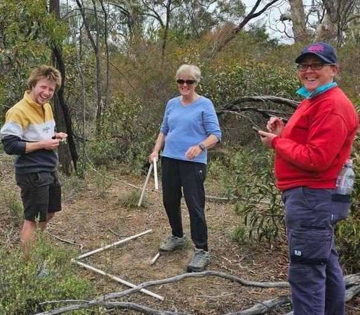
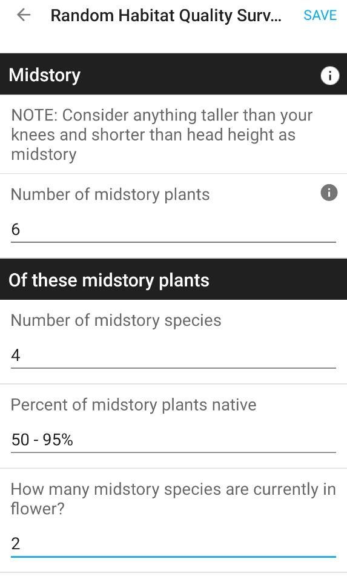
Landholders running a habitat structure survey, and the phone form it is recorded on.Draft image · Project Platypus workshop slides
3.4
Why birds?
Birds are the most practical thing to monitor on a recovering block, for four reasons.
You can detect them. They are abundant, diverse and mostly identifiable by sound, which means you can survey them without catching or disturbing anything.
They read the habitat for you. Different species need different layers — ground, midstorey, canopy, hollows. A bird list is effectively a readout of the structure in 3.3. Losing the midstorey birds tells you the midstorey hasn’t come back, whatever the canopy looks like.
They recover on a known timetable. Diversity stays low for around three years after a severe fire (2.1), so a block that is still quiet in year two is normal — and one still quiet in year five is telling you something.
People notice them. The first return of a familiar call is the most convincing evidence of recovery most landholders will ever get.
There are two ways to survey them, and they answer different questions: a standard survey done by ear (3.5), and a listening station that runs continuously (3.6).
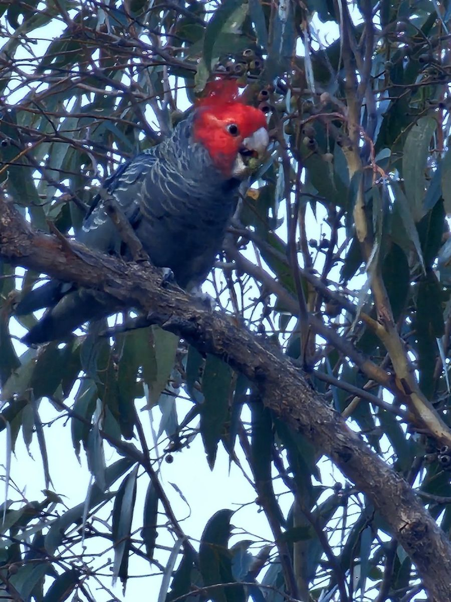
A gang-gang cockatoo on a demonstration property after the fire.Draft image · John King, Pomonal talk
3.5
Birds the traditional way
The BirdLife Australia two-hectare, twenty-minute survey is the standard method in this country. Its value is comparability: your results sit alongside everyone else’s, in the same format, going back decades.
A fixed two-hectare plot (3.1). Early morning is best. Avoid wind and rain.
The survey
Twenty minutes, staying within the plot. Record every species seen or heard.
For each species
Number of individuals; what it was doing; any breeding activity — nest, carrying material, feeding young.
Also record
Start time, observers, and whether there is water in the plot. Water makes a large difference to what turns up and is needed to interpret the results.
How often
Once per season, four times a year, in the same plots.
If you can’t identify birds by call, join a round rather than starting cold. Local Landcare groups and birding networks run surveys and are generally glad of company — it is the fastest way to learn, and you end up with the data either way.
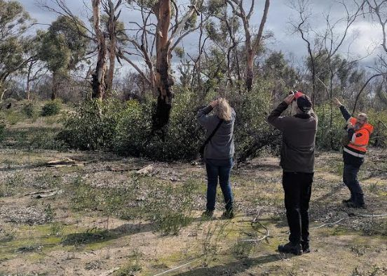
A bird survey under way on a demonstration property.Draft image · Project Platypus bird workshop slides
3.6
Birds the automated way
A listening station is a small weatherproof-cased unit with microphones that records continuously and identifies calls automatically — three-second slices of song turned into a spectrogram, then matched by image recognition. Results appear on a phone app, usually within minutes.217 It runs unattended for months, which is the whole point — see 3.7 for what it can and can’t tell you.
Setting up a listening station
What you need
The unit, a solar panel, and a 4G router with a data-only SIM. Mobile coverage is the usual constraint.
Siting
Within earshot of the ground you actually want to know about — the unit hears its own patch, not your property (3.7). Away from constant noise: roads, pumps, spillways. Where the panel gets sun and the router gets signal.
Mounting
The casing is weather-resistant, not weatherproof. Mount it so water runs off and it is not sitting in driving rain.
Checking it
Open the app once a week and confirm detections are still arriving. Flat batteries after cloudy weeks and dropped mobile coverage are the two common failures, and both are fixable once noticed.
Recordings are kept, so an unusual identification can be listened to and checked, or uploaded to iNaturalist for someone else to confirm.
Needed
Connor’s completed maintenance and troubleshooting sheet, and the “V2” setup notes for sites with poor mobile coverage. Also current unit and running costs, to put a figure in this section.
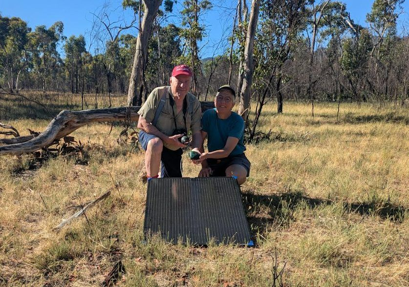
A landholder and project staff with a listening station and its solar panel.Draft image · Project Platypus bird workshop slides
3.7
What a listening station can and can’t tell you
Three things are worth knowing before you buy one, and none of them are in the manual.
1. It hears its own patch, not your property
We tested this against an experienced observer surveying a plot while we checked what the nearest station logged in the same twenty minutes. Standing in the plot, the station picked up roughly one of the birds the observer recorded. Several hundred metres away it picked up essentially none of them, and logged a different set of birds instead.
So a station’s list belongs to the ground it stands on. One unit does not cover a property, and if there is unburnt bush within earshot, some of what it hears is coming from there.
2. It will be offline more than you expect
Across our nine stations the network ran less than half the time, and by late winter seven of the nine were down — flat batteries, dropped coverage, water where it shouldn’t be. Check yours weekly. And read a quiet month as a flat battery before you read it as quiet bush.
3. It will name the odd wrong bird
Identification is done by an AI model listening for call patterns. It is right most of the time. One of our stations, beside a farm dam a long way inland, confidently reported a seabird. Treat an unusual record as a question — the recording is saved, so you or a local birder can check it.
What it is good at, and what it can’t replace
A station listens every day, at dawn, dusk and two in the morning, for months. Over the year ours picked up 117 species across the nine properties; expert observers surveying the same properties seasonally recorded 59. Night-callers, cryptic species and the bird that turns up once in June are the station’s territory.
But some birds barely vocalise. Our observers recorded a goshawk, a kite, a falcon and a firetail that no station ever picked up, and one parrot recorded by observers at five properties was never detected acoustically. Do both if you can. If you can only do one, the station is the one you can afford to run forever.
A glider picked up on a thermal scope (left), and spotlighting with a red torch (right).Draft image · Project Platypus nocturnal workshop slides
Part 4
Helping it along
The things worth doing, in the order they are worth doing them: deal with the threats first, add habitat only where it is genuinely missing, and plant last.
Once you know what country you have and what is coming back by itself, you can decide where your effort is best spent. Weeds and pest animals come first, because controlling them is what the research most consistently finds makes a difference after fire, and the window to act is short. Hollows and nest boxes come next, but only where they are genuinely missing. Thinning and replanting come last: they are the most expensive, the hardest to undo, and often not needed at all.
4.1
Why invasives are the priority
If you do one thing for wildlife after a fire, control the weeds and pest animals. That is the consistent finding from research following Black Saturday and Black Summer: controlling introduced predators and herbivores is generally the most valuable intervention available, ahead of anything you can plant or build.
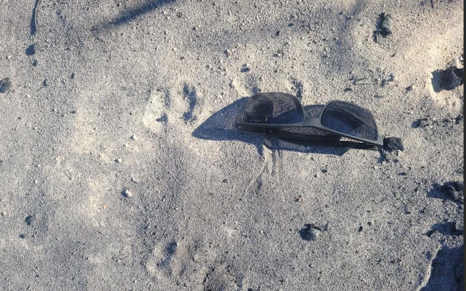
Footprints in the ash at 7 am, the morning after the fire.Draft image · Fire recovery pests talk. Confirm photographer
What happens to predators
Foxes and cats move into burnt country almost immediately — within hours of the fire passing. Research on fire-affected Victorian landscapes found that where understorey cover was lost, pest predator activity increased around five-fold, and fox predation on medium-sized native mammals doubled.
The reason is simple. The animals that survived the fire have nowhere left to hide, and they are concentrated in whatever cover remains. Long-term small mammal trapping in Victorian parks shows the same pattern from the other side: a sharp drop in native small mammals after fire, and a slow recovery.
What happens to herbivores
Deer, rabbits and house mice arrive fast and eat the recovery. House mice are typically the first mammal back, breeding up on seed and fresh germination, and can dominate for years before native species return.9 Deer and rabbits hit the regrowth at exactly the stage it can least afford it — a browsed-off seedling is the same outcome as no germination (2.2).
Not recommended: supplementary feeding
Putting out food for surviving wildlife is well meant and generally advised against. It concentrates animals where predators can find them, supports pest species as readily as native ones, and carries disease and dependency risks. The evidence supports controlling invasives instead.
The order that follows from this runs through the rest of Part 4: work out what you have (4.2), map and prioritise it (4.3), and deal with the animals (4.4).
Needed
The house mouse claim is now cited to Hale and others. Still uncited: the timing given for deer and rabbit impact on regrowth.
4.2
Weeds after fire — what to look for and where
Fire clears the ground, opens the canopy and puts nutrients in the ash bed. That is a regeneration opportunity for natives and an equally good one for weeds — and weeds are usually faster.
What makes a weed win after fire
Fire-cued germination — heat or smoke triggers it, so the fire itself starts the infestation.
A persistent seedbank — seed that has been waiting, sometimes for years.
Speed — establishing and setting seed before natives have closed the gap.
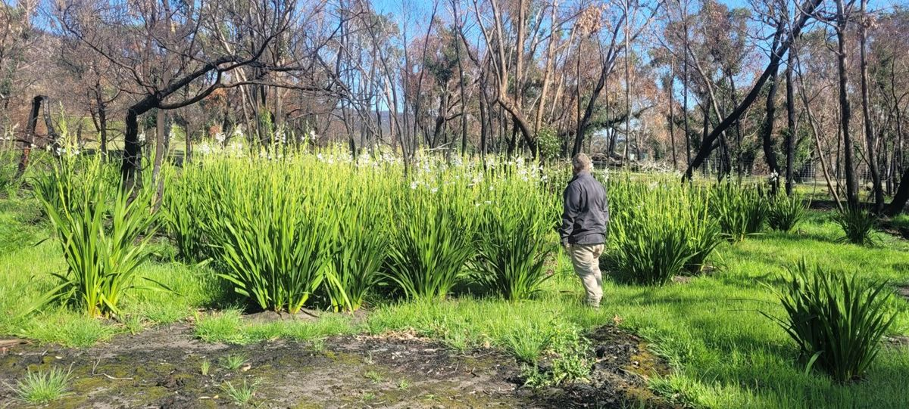
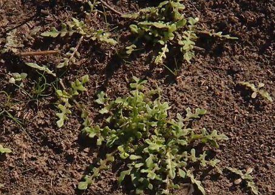
A flush of weeds through burnt forest (left), and weed seedlings in the ash bed (right).Draft image · Fire recovery pests talk. Confirm photographer
Where to look
Weeds arrive along edges and disturbance. Check, in roughly this order: access tracks and roadsides; watercourses and drainage lines, where rain carries seed downhill and eventually into waterways; animal pads and fence lines; and anywhere machinery worked during or after the fire, including containment lines and dozer tracks.
What this project found
Across the nine demonstration properties, the species that turned up were:
Woody: sallow wattle, blackberry
Grasses: perennial veldt grass
Pioneers: stinkwort, horehound, thistles
Bulbs, corms and tubers: cape tulip, South African weed orchid, arum lily, bridal creeper
New arrivals: red ink weed, which appeared on one property only after the fires
That last line matters most. A plant showing up on your place for the first time after a fire is the highest-value target you will get13 — small, beatable, and about to stop being either (4.3).
If you are not sure what something is, photograph it and let iNaturalist name it (3.2).18
4.3
Mapping, prioritising and controlling
Weed control after a fire goes wrong in a predictable way: everything looks urgent, people start at the gate and work inwards, and a year later the roadside infestation is knocked back while the small new one up the back has become the big one.
The fix is to write down what you have and where, before you start spraying. A map lets you prioritise rather than react, tells you where to return to, and shows progress over years — which is most of what keeps anyone going.
A phone with a mapping app, or a printed aerial photo and a pen.
When
Whenever you’re walking the block anyway. Different weeds show at different times, so a year of casual mapping beats one big effort in spring.
For each patch
What it is — photograph it and identify later if unsure.
How dense — scattered plants, or roughly what share of ground it covers. A rough band is enough.
How big — walk the outline, or pace it.
Date and a photo — what lets you judge in two years whether you are winning.
What you intend to do, and when to check back. The field people skip, and the one that turns a map into a work plan.
Afterwards
Record what you did, when, and whether it needs a follow-up. Almost everything does.
Needed
The full density band list from the project forms (I have three: sparse individual plants, 10–30% cover, 30–60% cover). Which mapping app should landholders be pointed to, and is there a public version of the Landcare weed mapping form?
Prioritising
New arrivals first. Small, beatable, and won’t be either in three years.
Small and isolated before big and established. An outlier you can eliminate outright beats a dent in a large infestation.
Protect the best country first. Work outward from your highest-value bush, not inward from the fence.
Work along the spread paths. Uphill and upstream of clean country. Treat the source before the sink.
Project Platypus has a weed prioritisation tool that works this through more formally, weighing how invasive a species is against how much you have and what it threatens.
The two-year rule
Keep checking disturbed ground for at least twenty-four months. Many post-fire weeds arrive in the second year, once the ash bed has settled. The people who get caught are the ones who looked in the first spring, saw little, and stopped.
Not bringing more in
After a fire there is more traffic on your place than ever — contractors, fencing crews, gravel, hay, machinery — and nearly all of it is a weed vector. Wash down vehicles, machinery, boots and tools on the way in and out, and use certified weed-free seed, mulch, soil and gravel.
Control: match the method to the plant
What works depends on how the plant stores its energy and moves its seed. Broadly:
Woody legumes (sallow wattle, blackberry) — fire-triggered seedbanks mean mass germination. Plan for repeat visits across years, not one campaign.
Perennial grasses (veldt grass) — hardest to see, hardest to kill, easiest to spread on machinery.
Pioneers (stinkwort, horehound, thistles) — fast on bare ground, but the most tractable group if caught before seed set.
Bulbs, corms and tubers (cape tulip, weed orchid, arum lily, bridal creeper) — the ones that defeat people, because the plant you can see is not where the energy is. The AABR guide to weeds with underground reproductive structures covers these in detail.
Needed
Control techniques, timing and herbicide guidance per species — the Agriculture Victoria Partnerships Against Pests material would cover it. I don’t want to write herbicide advice from general knowledge.
Case study · Phill and Joan Bennett, Pomonal
Why the life cycle decides the method
The Bennetts have about twelve hectares at Church Road, half of it under a Trust for Nature covenant. Blackberry is now eradicated; thistles, bridal creeper and arum lily have been worked back. Red ink weed appeared only after the fires. Their two hardest weeds show why biology matters more than technique.
One-leaf cape tulip grows from a corm that can sit 150 mm down and produces one to three new corms a year. About half stay dormant each season and don’t come up at all. One plant sets over a thousand seeds, viable around two and a half years, and takes two to three years to reach flowering age.
So: one pass can never work, because half the population wasn’t above ground. Commit to a multi-year cycle, and get them before seed set every year without fail.
South African weed orchid has tubers only about 5 cm down, so digging genuinely works. It sprouts around June. But it self-pollinates and releases hundreds of thousands of dust-fine airborne seeds from late November, viable seven years or more.
So: the whole game is getting them out before late November — and your neighbours matter, because that seed travels.
Anything dug up is burnt, or sealed in a black plastic bag and left in the sun: a corm left lying will keep ripening. Where ground is too rocky to dig or numbers too great, they spot spray. Where they can’t reach everything, they knock the flower heads off before seed develops — not a cure, but it buys a year.
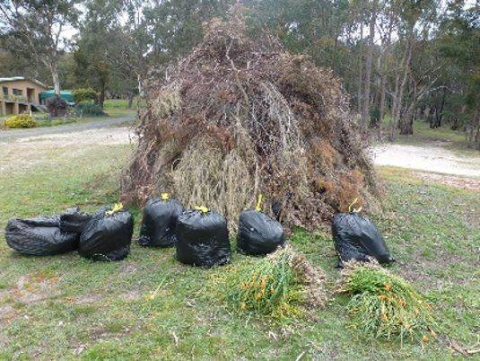
Pulled weeds bagged to cook in the sun, so the corms can’t reshoot.Draft image · Phil & Joan Bennett, Pomonal. Needs sign-off
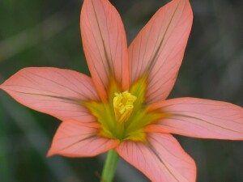
Cape tulip flower
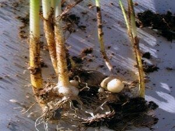
Cape tulip corms
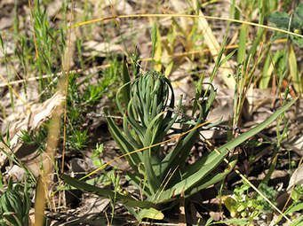
Weed orchid rosette
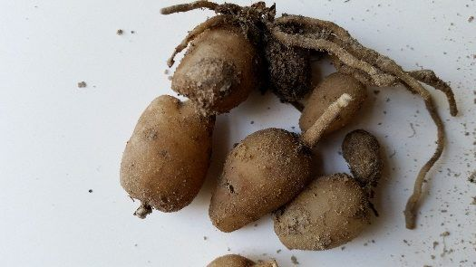
Weed orchid tubers
One-leaf cape tulip and South African weed orchid.Draft image · Phil & Joan Bennett, Pomonal. Needs sign-off
Images
One-leaf cape tulip and South African weed orchid — whole plant, flower, and the corm or tuber in the hand for scale.
Source: the Bennetts’ workshop slides. Needs sign-off.
Needed
The corm and tuber figures for cape tulip and weed orchid, and the germination timings, all need a source — they are currently unattributed.
4.4
Pest animals
Fire changes the balance between native animals and pest species, and it changes it quickly. It also opens a short window where control is unusually effective.
Foxes and cats
They arrive within hours and hunt in the open. There is no realistic way for one landholder to hold a fox population down alone — foxes range widely and the gap fills. This is the clearest case for coordinated work: baiting and trapping programs run across whole landscapes, and joining one does more than anything on your own boundary.
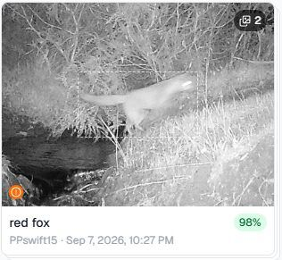
A fox on a project trail camera, identified automatically.Draft image · Project Platypus trail camera, 2026
Deer
Fallow and red deer are the main problem in this region. They damage regrowth at the stage it can least afford it, compete with native herbivores, spread weed seed and trample sensitive ground. Control is through ground and aerial shooting and trapping, and again works best coordinated — there is a regional deer program you can join rather than starting from scratch.
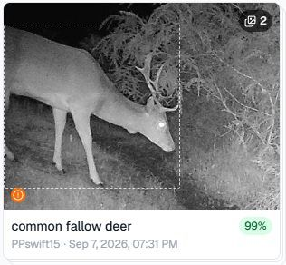
A fallow deer on a project trail camera.Draft image · Project Platypus trail camera, 2026
Rabbits
Rabbits are the one pest where fire genuinely helps you. Burnt ground makes warrens visible for the first time in years, and with little feed about, remaining rabbits take bait far more readily. If you are going to do rabbit work, the eighteen months after a fire is the moment.
Two cautions. Surviving native animals are also short of food and shelter, so plan control with that in mind. And machinery work around warrens can damage waterways and Aboriginal cultural heritage — check before you start.
Rabbits breed faster than you think
A doe can produce around 28 young a year, in litters of four to six, and is capable of re-mating within hours of giving birth. Partial control is not control — a warren left half-ripped will be back to capacity in a season.
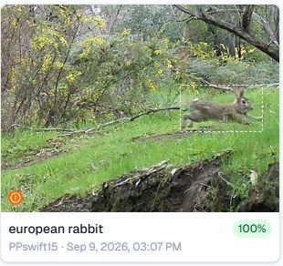
A rabbit on a project trail camera.Draft image · Project Platypus trail camera, 2026
Know your obligations
Baiting, shooting and earthworks all carry legal requirements, and some need permits. Agriculture Victoria, DEECA, your CMA, Aboriginal Victoria and your local council can tell you what applies. Ask before you start rather than after.
Use your monitoring
Trail cameras (3.9) tell you which pest species are actually present, where they move and when — which is the difference between control aimed at a problem and control aimed at a guess.
Needed
Names and contacts for the programs landholders should join — the regional predator program, the deer network, and any local community pest management groups. I’ve kept them generic rather than name them wrongly.
Still uncited: the rabbit fecundity figures.
4.5
Hollows
More than 300 Australian vertebrate species depend on tree hollows — around 114 birds, 83 mammals, 79 reptiles and 27 amphibians.24 They use them for nesting, breeding, shelter, and escape from predators and weather.
Hollows cannot be hurried
Hollows form slowly, through fire scars, branch loss, fungal decay, insect activity and plain weathering. Typical formation times:
Approximate time for hollows to form, and the animals that use each size.
Hollow size
Years to form
Typical users
Small (under 5 cm)
80–120
Small parrots, microbats, small marsupials
Medium (5–10 cm)
120–180
Larger parrots, possums, owlet-nightjars
Large (over 10 cm)
180–300+
Cockatoos, owls, large possums
A hollow-bearing tree lost today cannot be replaced in a human lifetime. That single fact drives most of what follows.
Fire both makes and destroys hollows. Scars begin the decay that eventually forms one, and historically patchy, low-severity fire was part of how hollows came about. But severe fire collapses hollow trunks, brings down limbs and kills ancient trees outright — and it does that far faster than new hollows appear.
After a severe fire, hollow availability often drops, at least for a while, and competition for what remains rises. But a burnt tree is not necessarily an empty one. Fire can open new hollows in scarred trunks and limbs, and trees killed by fire can go on forming hollows for decades as they decay. The trees on your place that carry hollows now, burnt or unburnt, are doing work for a wide area.
Keep standing dead trees. Stags are often the best hollow trees on a property and are the first thing people tidy up. Where they can safely be kept, keep them (see 0.1 on hazard trees).
Keep old paddock trees. A single large old tree in the open may hold more hollows than a hectare of regrowth.
Leave fallen timber where it lies. Logs are ground-level habitat, and after fire there is very little other cover.
Only then consider adding hollows — and work out first whether you need to (4.6).
Diagram
The transect layout: 100 m tape, two observers, the 20 m band, and the three hollow size classes with the animals that use each.
To be drawn.
4.7
Boxes, carved hollows and pods
If 4.6 says your block needs more hollows, there are three ways to add them, and they suit different animals.
Nest boxes
The demonstration allocation used in this project was nine boxes per property across three designs — a squirrel glider box, a microbat box, and a small glider or antechinus box — built by the Stawell Men’s Shed. Eighty-one went up across the nine sites.
Three designs rather than one is deliberate. You rarely know what is looking for a hollow until something moves in, and occupancy across different designs is itself the answer (4.6).
Installing and checking boxes
Where
In the part of your block with the fewest natural hollows (4.6). Spread them rather than clustering.
Mounting
Hang on wire run through poly pipe, or fix with bugle batten screws and a washer. Grease the thread. Whatever you use, allow for the tree growing.
Height
Higher is not always better. Put some below three metres so you can actually check them from a ladder — a box you never inspect teaches you nothing.
Checking
Once a year, outside breeding season. Record the box, the design, and whether anything is using it. That record is what tells you whether to install more.
Safety
Ladder work and working at height carry real risk. Get help, or get someone qualified.
For box designs, dimensions and entrance sizes by target species, see Project Platypus’s nest box resources, which gathers the DELWP, North East CMA, Land for Wildlife and BirdLife Australia guides in one place.
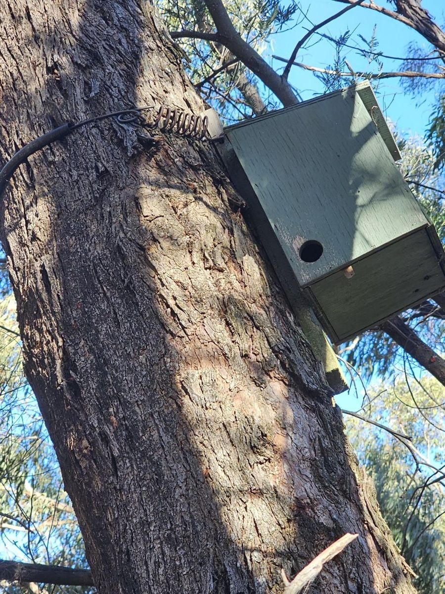
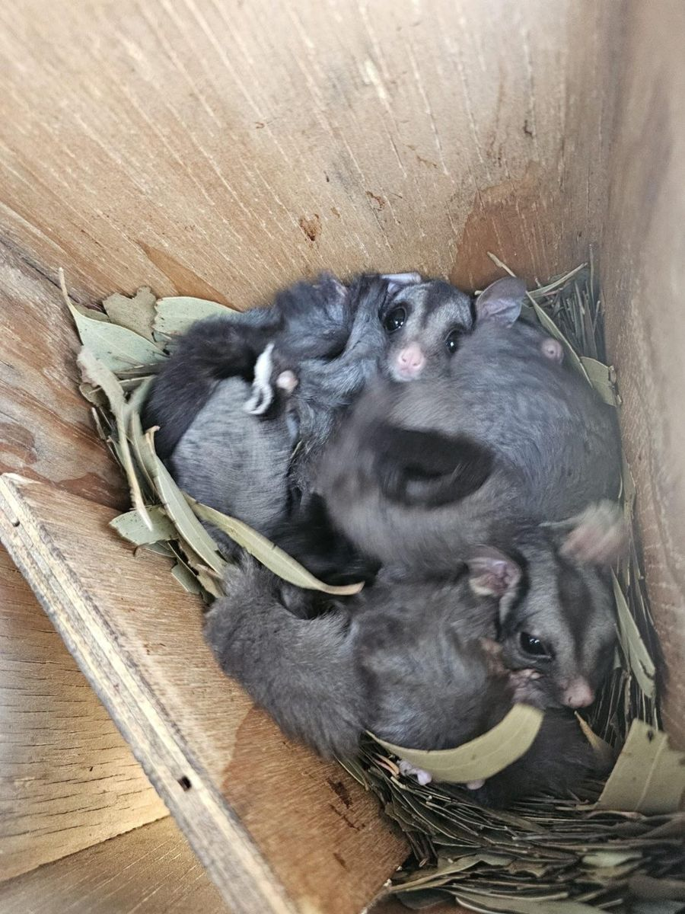
A nest box on a demonstration property, and its occupants.Draft image · John King, Pomonal talk
Carved hollows
A hollow can be cut directly into a living tree by a climbing arborist, producing something closer to the real thing than a box: better insulated, longer lasting, and part of the tree rather than bolted to it. It needs a specialist, so it suits a few high-value trees rather than a whole property. Log-box hollows — assembled from a hollowed section of log — are a middle option that a group can build in a workshop.
Habitat pods and ground habitat
Not everything nests in trees. Ground-dwelling mammals and reptiles lose their cover entirely in a severe fire, and ground-level structures help while the understorey rebuilds: habitat pods, tile grids, and basking tiles for reptiles. Trust for Nature supplied eight pods per site to the three Little Desert properties in this project.
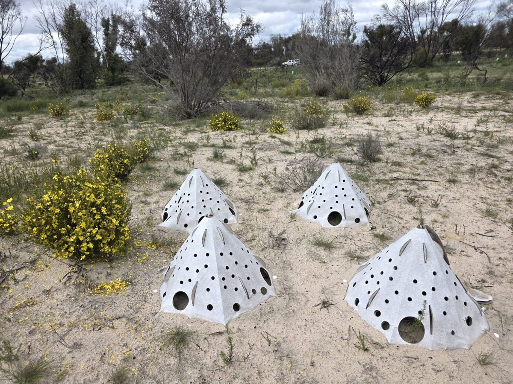
Habitat pods set out after the fire at Banksia Springs, Little Desert.Draft image · Mirinda Thorpe, Banksia Springs talk
Needed
Dimensions and entrance sizes for the three Stawell Men’s Shed designs, and whether we can publish the plans. Also the name of the arborist and hollow-building service to credit for the carved hollows.
One caution to check before recommending habitat pods and log piles unreservedly: Hale and others (2022) report that added rocks and logs can encourage black rat populations. Worth confirming whether that holds in our vegetation types, and saying so if it does.
4.8
Thinning dense regrowth
After a hot fire, eucalypt and wattle regrowth can come up at thousands of stems per hectare. It looks like a good result, and for a few years it is — but a wall of even-aged saplings shades out the ground layer, and the understorey diversity that survived the fire can be lost to the regrowth rather than to the fire itself.
The questions this section needs to answer: how to tell dense regrowth that will self-thin from regrowth that won’t; when thinning is justified and when it is meddling; how much to take and on what spacing; what to do with the material; and whether it is worth doing at the scale a landholder can manage.
Needed
This is the thinnest section in the guide and I don’t want to write it from general principles. The project ran small trials of understorey diversity protection through thinning — can you point me at the method, the sites and anything observed so far? Failing that, whose advice should this section carry?
4.9
Do I need to replant?
The most common question after a fire, and the answer is nearly always not yet.
Planting into regenerating ground is one of the few genuinely counterproductive things you can do. The seedlings you can’t see yet are competing with what you put in, tubestock brings its own weed seed and genetics, and the money is gone at the point where weed and browsing control would buy you far more.
Decision — do I need to replant?
1 — Wait a full growing season, ideally two
The first spring after the fire is when most of what will return appears, and some of it appears only then (section 2.2).
2 — Record what comes up
Walk the block and photograph one of everything (section 3.2). You are building a list, not identifying on the spot.
3 — Compare against what should be there
Your pre-1750 vegetation type (section 1.2), or any species list recorded before the fire.
4 — Ask what is actually missing
Not “does it look bare”, but: is a whole layer absent two seasons on, or a species you know was there?
5 — Then plant, into the gap
Targeted, not spread across the paddock.
Good reasons to plant
A species burnt out locally — most likely where two fires fell inside the minimum interval (section 1.4) and a seeder never returned.
A structural layer still absent after two seasons, shrubs especially.
Connectivity — linking two patches so animals can move between them.
Erosion — actively moving soil. Urgent, and properly soil stabilisation rather than revegetation.
Reasons that aren’t
It looks bare. It will, for a while.
You want to be doing something. There is plenty to do — see below.
There is funding for plants. Funding is not a diagnosis.
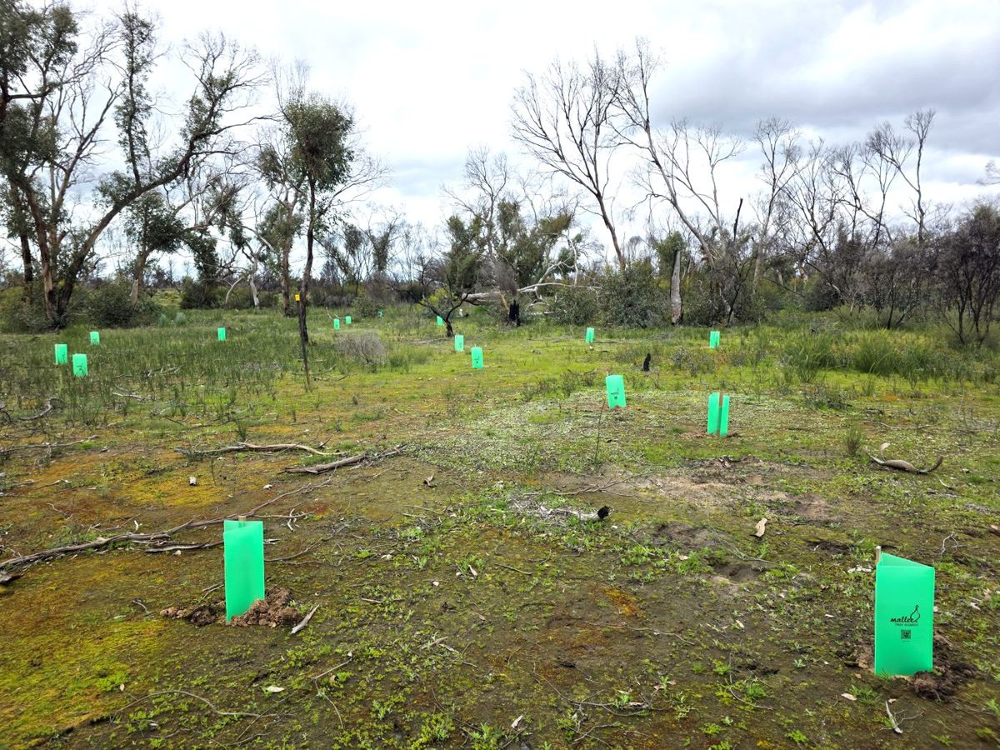
Guarded plantings of Buloke and Hakea at Banksia Springs after the fire.Draft image · Mirinda Thorpe, Banksia Springs talk; Trust for Nature
If you do plant
Match the vegetation type — your EVC benchmark (section 1.2) lists what belongs. Use local provenance stock, and weed-free mulch, soil and gravel (section 4.3). Plant into gaps rather than across regenerating ground, and guard against browsing, or you are running a feeding station for deer and rabbits.
While you wait
Protect what survived, control the weeds coming through the ash bed, deal with browsing pressure, and set up the monitoring that will tell you in two years whether anything is missing. Part 5 puts that in order.
Needed
This section still tells people to use the EVC benchmark for species lists, which Yasmin Kelsall specifically advised against — queued for correction along with 1.2.
Part 5
Your property plan
What do I do, in what order, this season?
This part pulls the rest of the guide together into something you can act on. It sets out what to do first and what can wait, gives you a one-page recovery plan to fill in for your own block, and a seasonal calendar so you know what to be doing when. If you have worked through Parts 1 to 4, most of the plan is already decided. If you have skipped ahead, the priority order will show you which parts to go back to.
5.1
Priority order
Everything in this guide, in the order it is worth doing. The logic is simple: cheap and effective first, expensive and irreversible last, and nothing bought before the data says it is needed.
The order of work after a fire.
#
Do this
When
Where
1
Protect what survived
Immediately, and permanently
4.5, 1.5
2
Control weeds and pest animals
First two years, hardest
4.1–4.4
3
Set up monitoring and record what returns
Now, then ongoing
Part 3
4
Add habitat where it is genuinely missing
Once the data says so
4.6, 4.7
5
Thin regrowth, if it needs it
Several years on
4.8
6
Replant what has not returned
After two growing seasons
4.9
Why this order
Protection is free and irreplaceable. An unburnt patch, a hollow-bearing tree, a fallen log — none of these can be bought back once lost.
Invasives are the one thing that reliably changes the outcome. The research after Black Saturday and Black Summer is consistent on this (4.1): the rapid assessments following the 2019–20 megafires both concluded that controlling introduced predators and herbivores was the most valuable intervention for native species recovery.2526 The window is the first couple of years.
Monitoring comes before intervention, not after. Nest boxes, thinning and replanting are all decisions that need evidence. Without it you are guessing, and the guesses cost money.
Replanting is last because most of it is unnecessary. That is not a counsel of despair — it is the most useful thing in this guide. Money not spent on tubestock is money available for weed control, which will do more.
Needed
Now cited to Legge and others and to Geary and others. Worth a read of both before publication to check we are representing their conclusions fairly rather than borrowing the headline.
5.2
A one-page property recovery plan
One page, filled in once and revisited each year. It turns the rest of the guide into a decision you have actually made.
Your recovery plan
1 — My place
Bioregion (1.1) · EVC and pre-1750 EVC (1.2) · vegetation division and its tolerable fire intervals (1.4) · fire years on record (1.3) · gap since the previous fire · growth stage (1.5)
2 — What I have set up
Photo points (how many, where) · monitoring plots · listening station · trail cameras · date started
3 — What I found
Species list started (date) · layers present and missing (3.3) · hollow-bearing trees per hectare in each plot (4.6) · birds recorded · nocturnal animals recorded, native and pest · weed patches mapped and which species
4 — What this tells me
Is a layer missing? · Are hollows short? · Which weeds are the priority (4.3)? · Which pest animals are present (4.4)?
5 — Three things I will do this year
Written as actions with a month against each. Three, not ten.
6 — What I will check next year
The date, and what I will compare it against.
Keep it with your photo point records. The value is in filling it in again in twelve months beside the first version — that comparison is the whole point of Part 3.
Needed
A printable version of this page, designed to be filled in by hand, alongside the field sheets in 6.2.
5.3
Seasonal calendar
What to do when. Timings follow the seasons this project worked to; adjust for your own district and season.
A year of monitoring and works on a recovering block.
Season
Monitoring
On-ground work
Summer Dec–Feb
Summer bird survey (3.5). Check the listening station and cameras.
Little. Avoid working in the bush on hot or windy days. Map weeds you can see while walking.
Weed orchid emerges from June. Woody weed control. Check and clean nest boxes before breeding season (4.7).
Spring Sep–Nov
The big one: the species walk with iNaturalist (3.2). Spring bird survey. Photo points.
Get bulb and tuber weeds out before seed set — weed orchid seeds from late November. Spring weed control.
Once only, at the start
Set up photo points and monitoring plots (3.1), and pull your fire history and vegetation type (1.2, 1.3). None of it takes long and everything else depends on it.
The first spring is the one that matters
If you do one thing in the year after a fire, walk the block in the first spring with a camera. Much of what appears then will not be visible again for decades.
Needed
Your review of the weed control windows once the species-by-species guidance in 4.3 is settled. This table is only as good as those timings.
Part 6
If you haven’t burnt yet
Three things worth doing while the bush is intact. None of them take long, and every one is worth more now than it will be afterwards.
If your bush hasn’t burnt, or hasn’t burnt recently, now is the best time to prepare. Much of what this guide asks you to do after a fire is easier and more useful if you have a record of what was there before. Starting a species list, setting up photo points and doing the Part 1 desk work now means that if a fire does come, you can judge the recovery against what you had rather than guessing.
6.1
Start a species list
The most valuable record you can hold is a list of what grows on your place. Start it now, on iNaturalist, and build it across the seasons.
You don’t need to identify anything. That is the part that stops people before they begin. Walk your block, and whenever you see something in flower that you don’t recognise, photograph it — whole plant, leaves, and the flower — and post it. The app suggests a name and other people confirm or correct it. Your job is to capture an example, not to know what it is.
Walk it seasonally. Most plants are only identifiable while they are flowering, and they don’t all flower at once.1816 A walk each season for a couple of years turns up things a single spring walk never will. Section 3.2 has the detail on photographing plants so they can actually be identified.
What it gives you later
Zoom to your property on iNaturalist and you have every species anyone has recorded there. Print it off and it becomes a checklist: after a fire, walk the block and tick off what comes back.
What is still unticked after two or three seasons answers the question that matters — not what returned, but what didn’t. That is what decides whether replanting is warranted (4.9), and it is not a question you can answer from memory.
It works the other way too. Anything you find that is not on your list is new, and after a fire a new plant is either a fire-cued germinator that has been waiting in the soil for decades2 (2.2) or a weed worth acting on early (4.2).
For a head start on what to look for, the Atlas of Living Australia will give you a checklist of everything recorded in the country around you — 2.3 shows what one looks like. It is a prompt rather than a record of your block.
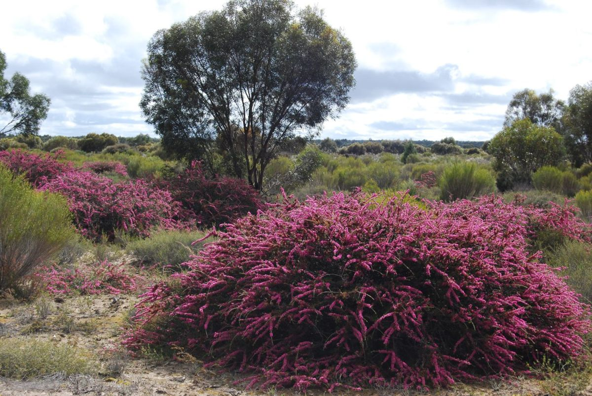
Banksia Springs in flower before the fire. A species list made in years like this is the record you’ll want afterwards.Draft image · Mirinda Thorpe talk. Photo: Stuart Thorpe or Clive Crouch, to confirm
6.2
Photo points in your best country
Photo points are the cheapest monitoring there is, and the before photograph is the one you cannot go back and take.
Put them in your best country first. The richest understorey, the densest midstorey, the stand of old trees with hollows. These are the places you most want to be able to protect, and the places where knowing what was lost will matter most.
You can add more points after a fire, and you will — across badly burnt, lightly burnt and unburnt ground (3.1). But those tell you how the ground recovered. A point set up beforehand tells you what it recovered to, and whether it got back there.
Section 3.1 has the protocol: mark the standing position, frame on a fixed landmark, record the point name and date.5 Three to five points and an afternoon.
2000
2005
Later
The Banksia Springs gate photographed over the years: an accidental photo point that now shows how the country changed.Draft image · Stuart & Kerrie Thorpe; Mirinda Thorpe talk
Map the good patches while you are at it
Mark on an aerial photo where the best understorey is, where the midstorey is densest, where the old trees stand. You are recording two things: what to compare against afterwards, and what to defend first if you ever get the choice. The habitat structure survey (3.3) gives you a proper way to record those layers, and doing it once now is worth more than three times later.
6.3
Do the desk work now
Part 1 is a set of lookups that take an afternoon and do not require a fire to be useful.2 Doing them in advance means that if one comes, you already know what you are dealing with.
Your vegetation type (1.2) — the EVC and division your block sits in, and the benchmark list of what belongs there.
Your fire history (1.3) — every fire on the record, and the gaps between them.
Your tolerable fire intervals (1.4) — the minimum and maximum your vegetation can take.
Your growth stage (1.5) — how long since the last fire, and what that means for what is there now.
Then sort your species list
Take the list from 6.1 and put every species into a fire-response group — resprouter, seeder, or fire-cued (2.2 has the method). The seeders are your watch list.417
Now put that against your fire history. If the gap since your last fire is shorter than the minimum interval for your vegetation, the seeders on your list are the species at risk, and you know which ones to look for before anything happens rather than afterwards.
The short version
Start a species list. Put photo points in your best country. Look up your vegetation type, fire history and intervals. That is a weekend of work, and after a fire it is the difference between measuring your recovery and guessing at it.
Back
Reference
This part is for dipping into rather than reading through. It lists who can help with advice, funding, surveys and on-ground work; the field sheets for each protocol in the guide, ready to print and take on a walk; and a glossary of the terms used throughout.
7.1
Who can help
Very little of this is best done alone, and most of it is cheaper and easier with help.
Your local Landcare group or network. The first call. They run surveys you can join, often hold shared equipment such as thermal scopes, and know your district’s weeds and who else is working on them.
Your Catchment Management Authority. Can pull your property’s fire history and mapping (1.3), and administers much of the funding.
DEECA for vegetation, fire ecology and threatened species questions; Agriculture Victoria for weed and pest declarations, control methods and legal obligations (4.4).
Trust for Nature for conservation covenants and, in this project, habitat pods.
Your local Men’s Shed for nest boxes. This worked well here and is worth asking about.
Local ecologists and birders. An expert survey once or twice a year complements anything automated (3.7), and local birders will verify uncertain records.
Needed
The actual names, phone numbers and links to publish here, and confirmation from each organisation that they are happy to be listed.
Post-fire Weeds Triage Manual (Arthur Rylah Institute) — the Victorian reference on deciding which weeds to tackle first after fire. The longer version of 4.3.
BlazeAid volunteers pulling out burnt fencing at Banksia Springs.Draft image · Mirinda Thorpe talk; BlazeAid
7.2
Field sheets
One printable sheet per protocol in this guide. Take them on the walk; transcribe or photograph them afterwards.
Field sheets and what each records.
Sheet
Records
Section
Photo point log
Point name, date, direction, frame reference
3.1
Species walk
Running list, photo numbers, anything unfamiliar
3.2
Habitat structure
Canopy, midstorey and understorey measures by plot
3.3
Bird survey
Plot, start time, observers, water, species with counts and behaviour
3.5
Station check
Date checked, detections arriving, battery, signal, action taken
3.6
Camera log
Camera ID, location, direction, set and collected dates
3.9
Night walk
Route, start time, species, numbers, native and pest
3.9
Hollow transect
Plot, per tree: hollows by size class, DBH, dead or alive
4.6
Weed record
Species, density band, extent, date, photo, planned action, follow-up
4.3
Nest box check
Box ID, design, occupied or not, by what
4.7
Recovery plan
The one-page plan, filled in
5.2
Needed
These have to be designed and laid out as printable A4 sheets, and the habitat structure one can’t be finalised until the plot geometry in 3.3 is confirmed.
7.3
Glossary
Term
What it means
Bioregion
A large area sharing geology, landform, climate and vegetation. Four cover this region (1.1).
EVC
Ecological Vegetation Class. The mapped vegetation type for a piece of ground, with a number and a name (1.2).
EVD
Ecological Vegetation Division. EVCs grouped by how they behave; the level that carries the fire intervals (1.4).
Tolerable fire interval
The shortest and longest gaps between fires a vegetation type can take without losing species (1.4).
Growth stage
How long since the last fire: juvenile, young, mature or old (1.5).
Resprouter
A plant that survives fire and reshoots from protected buds, in bark or underground (2.2).
Obligate seeder
A plant killed by fire that returns only from seed. The group most at risk from repeat fire (2.2).
Epicormic shoots
New growth emerging straight from bark on a trunk or limb — the clearest sign a tree survived.
Fire ephemeral
A short-lived plant that germinates after fire, holds the soil and then largely disappears (2.2).
Seedbank
Seed held in the soil or in woody fruit, waiting for the conditions — often heat or smoke — to germinate.
DBH
Diameter at breast height. The standard way to record tree size (4.6).
Hollow-bearing tree
A tree with cavities animals can use. Living or dead (4.5).
Stag
A standing dead tree. Often the best hollow habitat on a property (4.5).
Provenance
Where planting stock originally came from. Local provenance is adapted to local conditions (4.9).
Listening station
An automated unit that records and identifies bird calls continuously (3.6).
Atlas of Living Australia
The national database your iNaturalist records flow into (3.2).
Sources
Yasmin Kelsall, vegetation specialist, in her talk Reading the vegetation at the Reading the Landscape workshop, Pomonal, September 2026. ↩
Cheal, D. (2010) Growth Stages and Tolerable Fire Intervals for Victoria’s Native Vegetation Data Sets. Fire and Adaptive Management Report No. 84, Department of Sustainability and Environment, Victoria. www.ffm.vic.gov.au↩
Pauline Rudolph, Manager Environmental Values, Forest Fire and Operations Division (Grampians), DEECA, in her talk at the Reading the Landscape workshop, Pomonal, September 2026. ↩
Cawson, J. and Muir, A. (2008) Flora Monitoring Protocols for Planned Burning: a rationale report. Fire and Adaptive Management Report No. 75, Department of Sustainability and Environment, Victoria. www.ffm.vic.gov.au↩
Project Platypus, Wimmera Landcare Fire Recovery Partnership — unpublished monitoring data from the nine demonstration properties, 2025–26. ↩
Wimmera Draft Joint Fuel Management Program analysis, DEECA, as presented at the Reading the Landscape workshop, Pomonal, September 2026. ↩
John King, landholder, speaking about his own property at the Reading the Landscape workshop, Pomonal, September 2026. ↩
Hale, S. et al. (2022) Evidence that post-fire recovery of small mammals occurs primarily via in situ survival. Diversity and Distributions 28(3), 404–416. onlinelibrary.wiley.com↩
Hale, S. et al. (2016) Fire and climatic extremes shape mammal distributions in a fire-prone landscape. Diversity and Distributions 22(11), 1127–1138. ↩
Leahy, L. et al. (2016) Amplified predation after fire suppresses rodent populations in Australia’s tropical savannas. Wildlife Research 42(8), 705–716. ↩
Kerr, G.D. and Gully, G.A. (2023) Bird communities and effects of management in Heathy Woodlands in the Grampians/Gariwerd National Park. Transactions of the Royal Society of South Australia 147(2), 230–267. www.tandfonline.com↩
Robson, B.J. et al. (2018) Post-wildfire recovery of invertebrate diversity in drought-affected headwater streams. Aquatic Sciences 80, 1–15. ↩
Arthur Rylah Institute, Post-fire Weeds Triage Manual, Victorian Bushfire Reconstruction and Recovery Authority report series. www.ari.vic.gov.au↩
O’Donnell, S.A. (2007) The ecological role of fire in the northern Grampians National Park: management of serotinous species. ↩
Duncan, M. (2012) Response of Orchids to Bushfire: Black Saturday Victoria 2009 — Natural Values Fire Recovery Program. Department of Sustainability and Environment, Heidelberg. ↩
VicFlora, Royal Botanic Gardens Victoria — the identification reference for Victorian plants, including its overview of how the state’s flora interacts with fire. vicflora.rbg.vic.gov.au↩
Falster, D. et al. (2021) AusTraits, a curated plant trait database for the Australian flora. Scientific Data 8, 254. Data at austraits.org under CC-BY 4.0. austraits.org↩
iNaturalist Australia — community species recording, with identifications feeding through to the Atlas of Living Australia. inaturalist.ala.org.au↩
Atlas of Living Australia — occurrence records and downloadable species checklists. www.ala.org.au↩
BirdLife Australia, Birds in Backyards and Birds on Farms survey methods — the standard two-hectare, twenty-minute area search. birdlife.org.au↩
Kahl, S. et al. (2021) BirdNET: a deep learning solution for avian diversity monitoring. Ecological Informatics 61 — the recogniser behind the BirdWeather stations. birdnet.cornell.edu↩
Australian Association of Bush Regenerators, post-fire bush regeneration guidance and mapping resources. www.aabr.org.au↩
Gibbons, P. and Lindenmayer, D. (2002) Tree Hollows and Wildlife Conservation in Australia. CSIRO Publishing, Melbourne. ↩
Legge, S. et al. (2022) Rapid assessment of the biodiversity impacts of the 2019–2020 Australian megafires to guide urgent management intervention and recovery. Diversity and Distributions 28(3), 571–591. onlinelibrary.wiley.com↩
Geary, W.L. et al. (2022) Responding to the biodiversity impacts of a megafire: a case study from south-eastern Australia’s Black Summer. Diversity and Distributions 28(3), 463–478. ↩
Royal Botanic Gardens Victoria, VicFlora: Lowan Mallee bioregion; and DEECA, Lowan Mallee bioregion EVC benchmarks. vicflora.rbg.vic.gov.au↩